Chapter 5
SQL — The Language of Databases
Generated from the latest available chapter draft and companion parts.
Chapter 5: SQL — The Language of Databases
title: 'Chapter 5: SQL — The Language of Databases' author: 'Nimrod Dvir, PhD' date: 2026-05-30 lang: en-US toc: true
How Structured Queries Transform Stored Data into Business Insight

Click the image to watch the Chapter 5 companion video.
Chapter 4 introduced databases as structured systems for storing, protecting, and managing data. Chapter 5 introduces the language used to work with those systems: SQL, or Structured Query Language.
SQL is the standard language used to define database structures, insert records, retrieve results, and summarize patterns. It is one of the most transferable skills in business technology because the same core logic appears across Microsoft Access, SQLite, PostgreSQL, SQL Server, Oracle, and cloud data platforms. Later chapters extend SQL into reusable patterns and safe data modification.
This chapter treats SQL as a way to ask precise questions of structured data, not as a syntax list to memorize.
A business manager might ask:
- Which product category is underperforming?
- Which customers have not ordered in the last 90 days?
- What is the average delivery delay by region?
An instructor might ask:
- Which students are below 80?
- Who is missing work?
- What is the average score on Quiz 2?
- Which deliverable type has the lowest average performance?
Those are decision-support questions. SQL turns them into repeatable, inspectable database statements.
After reading this chapter, you will be able to:
- Explain what SQL is and why it matters for relational databases.
- Explain how SQL works as a declarative language.
- Distinguish among DDL, DML, DQL, and TCL at an introductory level.
- Create simple database tables using
CREATE TABLE. - Insert records using
INSERT INTO. - Retrieve, filter, sort, and label query results using
SELECT,FROM,WHERE,ORDER BY,DISTINCT, and aliases (AS) for both columns and tables. - Handle missing values using
IS NULLandIS NOT NULL, and work with dates stored as text. - Recognize a basic
INNER JOINas a preview of combining tables, with full join coverage in Chapter 6. - Summarize records using aggregate functions,
GROUP BY, andHAVING. - Build calculated and conditional outputs using expressions and
CASE.
Chapter Roadmap
This chapter is organized in six short parts that build gradually.
| Part | Focus | Main Question |
|---|---|---|
| Part 1 | SQL foundations and tools | What is SQL, where does it run, and why does it come next? |
| Part 2 | Teaching dataset | What tables will we use for practice? |
| Part 3 | Creating and inserting data | How do we define tables and add records? |
| Part 4 | Basic queries, aliases, and dates | How do we retrieve, filter, sort, label, and work with dates? |
| Part 5 | A first look at joins | How do we begin to combine related tables? |
| Part 6 | Aggregation and calculations | How do we summarize and transform data? |
SQL becomes easier when it is learned as a sequence:
Create structure -> add records -> retrieve rows -> filter results -> preview joins -> summarize patterns
Chapter 9 picks the thread back up with more advanced SQL patterns, including complex joins, subqueries, CTEs, and window functions. This chapter stops at the point where you can ask, filter, preview a table combination, and summarize structured data.
The chapter uses SQLite-friendly syntax unless otherwise noted. SQLite is lightweight and accessible, and the query logic transfers to Microsoft Access and PostgreSQL/Supabase.
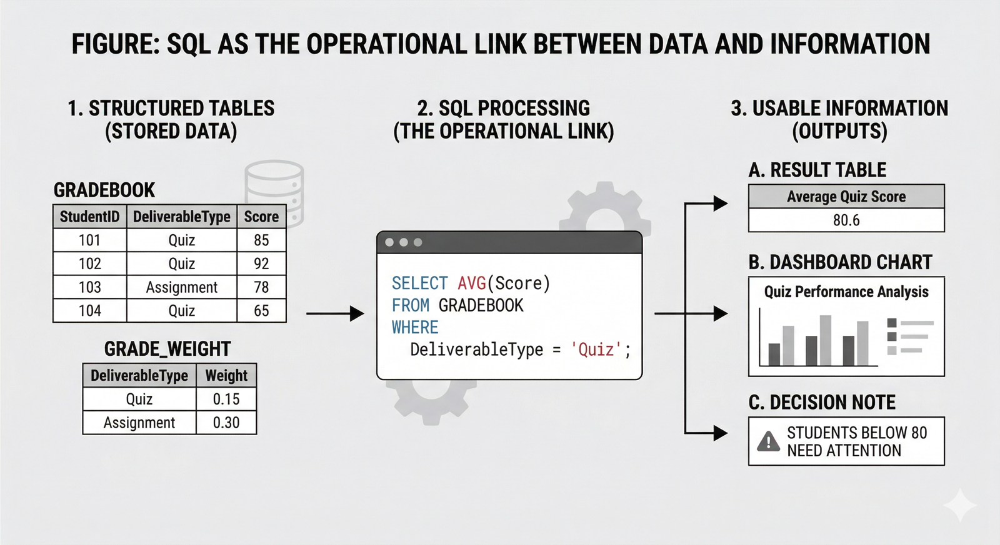
Figure 5.1: SQL as the Data Bridge. Database tables store raw records on the left, which pass through the declarative SQL query layer in the center to produce business answers, reports, and dashboards on the right.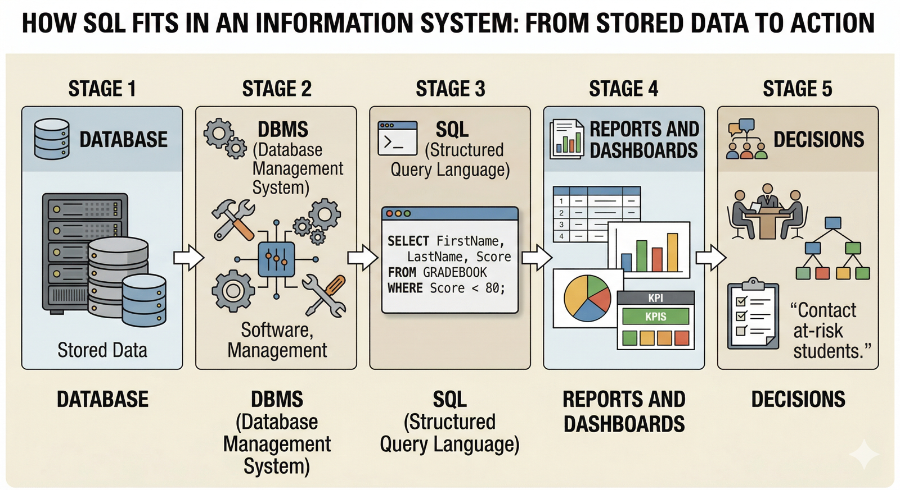
Figure 5.2: Chapter Roadmap. A step-by-step pathway showing how Chapter 5 concepts progress from defining structure to loading records, retrieving rows, filtering results, previewing a join, and summarizing patterns.Part 1: SQL Foundations and Tools
Why SQL Comes Next
Databases store data, but storage alone does not answer questions. A table can contain hundreds, thousands, or millions of rows. The value comes from being able to retrieve exactly the rows and columns needed for a specific purpose.
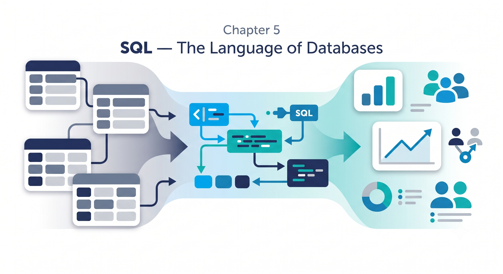
Figure 5.3: Before-and-After Query View. A large, complex grade table containing all student records is filtered by a declarative SQL query to return a focused list of students scoring below 80.SQL is the language that makes that possible.
Chapter 4 focused on the structure of databases: tables, rows, columns, keys, constraints, and the role of the DBMS. Chapter 5 shifts from where data lives to how people talk to stored data.
For example, a grading database may store every student score. That database becomes useful when an instructor can ask:
SELECT FirstName, LastName, Score
FROM GRADEBOOK
WHERE Score < 80;
This query says: show me the students whose scores are below 80. The database may contain many other facts, but the query retrieves only the records needed for this question.
🔑 Key Takeaway: SQL is a bridge
SQL is the practical bridge between structured storage and usable information. It turns a stored table into an answer to a specific question.
What SQL Is
SQL stands for Structured Query Language. It is the standard language used to work with relational databases.
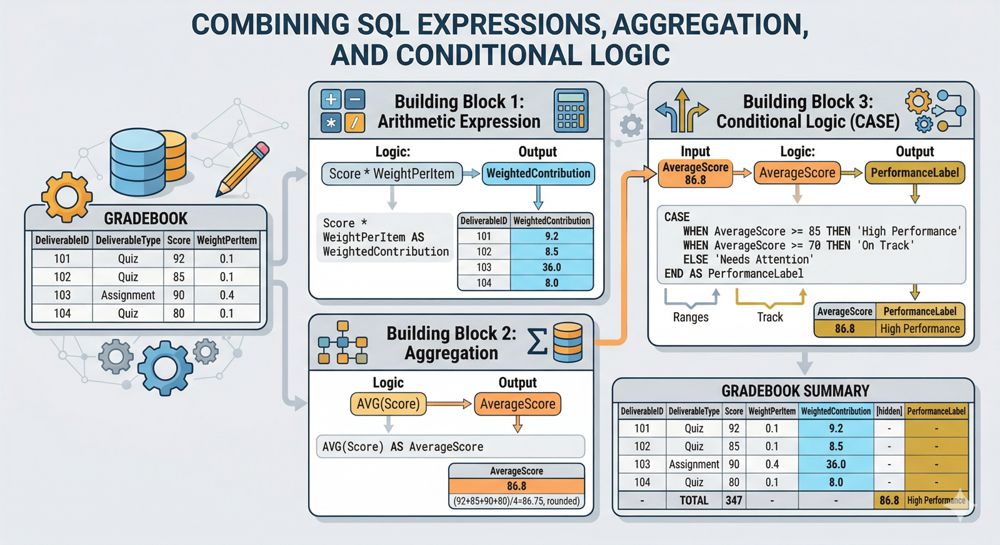
Figure 5.4: SQL in the Application Stack. Shows the hidden query layer where SQL runs beneath dashboards, registration portals, checkout screens, and reports to fetch structured data.The word structured matters. SQL assumes that data is organized into tables with rows, columns, data types, and rules. A SQL query works because the database already has structure.
SQL is not a general-purpose programming language like Python, Java, or JavaScript. It is specialized for database work. Its main jobs are to:
- define database structures;
- insert, update, and delete records;
- retrieve specific rows and columns;
- combine related tables;
- summarize and calculate results;
- support reports, dashboards, and decisions.
In a business setting, SQL often sits underneath dashboards and applications even when users never see it directly. A Power BI dashboard, a registration portal, an e-commerce checkout screen, or a university reporting system may all depend on SQL queries behind the scenes.
SQL Is Declarative
SQL is a declarative language. The user states what result they want, and the DBMS determines how to retrieve it.
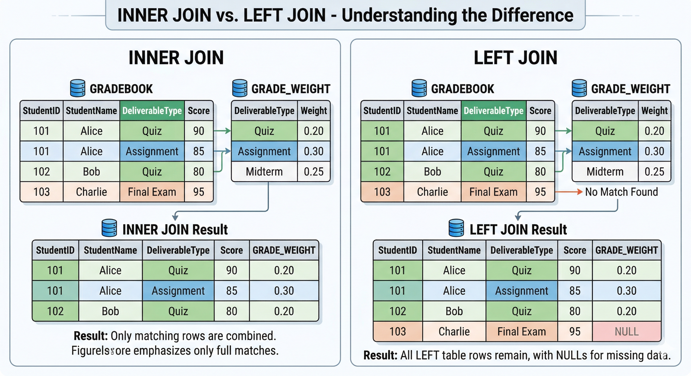
Figure 5.5: Declarative vs. Imperative Query Execution. The user specifies the needed data in standard SQL, and the database engine handles the physical scanning and retrieval plan behind the scenes.Consider this query:
SELECT FirstName, LastName, Score
FROM GRADEBOOK
WHERE Score < 80;
The query does not tell the DBMS how to scan the table, which storage path to follow, or whether to use an index. It declares the desired result: return the first name, last name, and score for rows where the score is below 80. The DBMS handles the execution plan.
A user can focus on the business question while the database engine handles the technical retrieval process.
| Plain-English Question | SQL Logic |
|---|---|
| Which students scored below 80? | Filter rows where Score < 80 |
| What is the average score? | Use AVG(Score) |
| Which deliverable types exist? | Use SELECT DISTINCT DeliverableType |
| Which quiz scores should be reviewed first? | Filter by quiz and sort by score |
SQL in the Information System
SQL sits between the user's question and the database response.
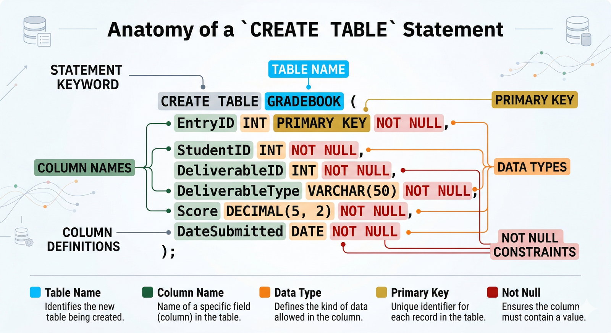
Figure 5.6: The SQL Query Pipeline. A step-by-step pipeline tracing a business question as it is translated into a SQL statement, parsed by the DBMS, executed against database tables, and returned as a query result to support a decision.graph LR
A[Business Question] --> B[SQL Statement]
B --> C[DBMS]
C --> D[Database Tables]
D --> E[Query Result]
E --> F[Report or Decision]
The database stores the data. The DBMS manages the database. SQL expresses the request. The result supports analysis, reporting, and decision-making.
In the broader book arc, SQL is where queries become the bridge from structured tables to analytics and decisions. Chapter 9 will return to SQL for deeper analytical reporting, and Chapter 14 will show how Power BI consumes SQL results to build dashboards.
Why SQL Is Useful
SQL remains widely used because it has several practical advantages.
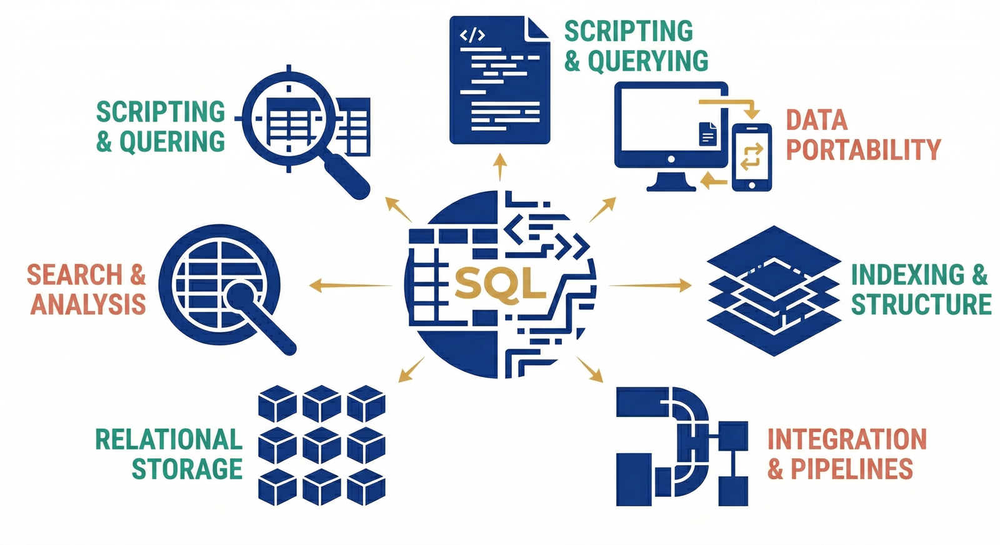
Figure 5.7: Transparency and Portability of SQL. Contrasts a hidden spreadsheet formula and a black-box dashboard metric with a clear, readable, and portable SQL statement.| Advantage | Why It Matters |
|---|---|
| Text-based | Queries can be written, saved, inspected, copied, and revised. |
| Portable | The core logic transfers across major relational DBMS platforms. |
| Transparent | A query shows the logic behind a result. |
| Flexible | SQL can retrieve, filter, summarize, join, insert, update, and delete data. |
| Reproducible | The same query rerun against the same data produces the same result. |
A spreadsheet calculation may be hidden in one cell. A dashboard may hide its internal logic. A SQL statement makes the logic explicit. That transparency matters for auditing, collaboration, debugging, and teaching.
SQL Categories at a Glance
SQL includes several kinds of statements. Students often begin with the distinction between Data Definition Language (DDL) and Data Manipulation Language (DML), but it helps to see the broader categories.
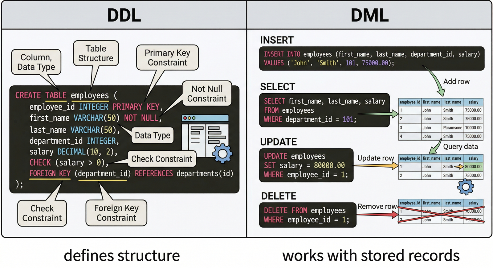
Figure 5.8: The Four Families of SQL. A toolbox overview illustrating DDL (structure), DML (records), DQL (retrieval), and TCL (transactions) with their respective commands.| Category | Full Name | Main Purpose | Example Commands |
|---|---|---|---|
| DDL | Data Definition Language | Defines or changes database structure | CREATE TABLE, ALTER TABLE, DROP TABLE |
| DML | Data Manipulation Language | Inserts, updates, or deletes stored records | INSERT, UPDATE, DELETE |
| DQL | Data Query Language | Retrieves data | SELECT |
| TCL | Transaction Control Language | Manages grouped operations | COMMIT, ROLLBACK |
In many textbooks, SELECT is grouped under DML. In this book, we separate Data Query Language (DQL) because retrieving data is the core activity students practice first. The simple memory hook is: DDL defines structure, DML changes records, DQL retrieves results, and Transaction Control Language (TCL) manages transactions.
Tools You Will Use
The same SQL logic runs in many environments. In this course you will see three:
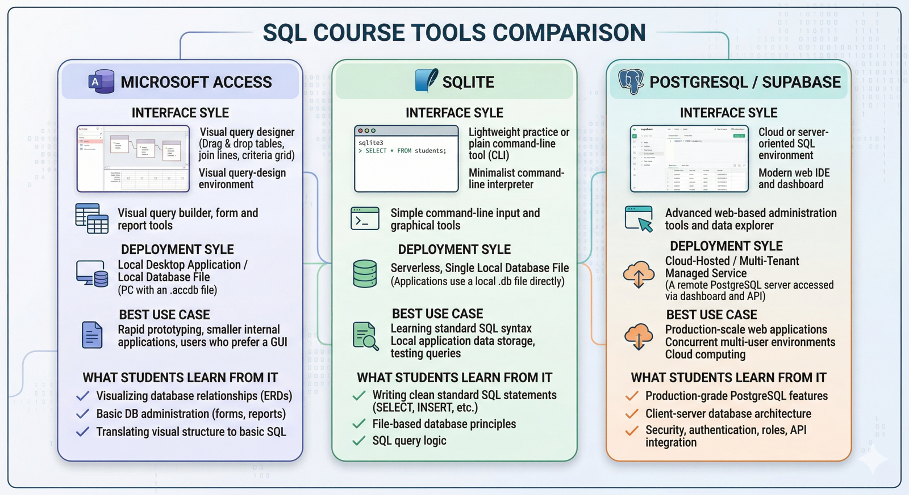
Figure 5.9: Database Platform Comparison. Displays the same SQL query executing in Microsoft Access SQL View, SQLite Online, and a Supabase SQL editor to show syntax portability.| Tool | Where It Runs | Strength | Limitation |
|---|---|---|---|
| Microsoft Access | Windows desktop | Visual design, forms, and reports for small databases | Some SQL features (multi-row insert, CTEs) are limited |
| SQLite | Local file or browser (SQLite Online, DB Browser) | Fast, free, friendly for learning standard SQL | Lighter type system; missing a few advanced features |
| PostgreSQL / Supabase | Hosted cloud database through a browser dashboard | Industry-style SQL environment; useful later for cloud database work | Requires account setup and more platform management than SQLite |
A quick orientation:
- Access exposes SQL through Query Design (a graphical builder) and SQL View (a text editor). Every query you click together in Query Design is translated into SQL behind the scenes.
- SQLite is the default environment for examples in this chapter because it accepts standard SQL with very little setup. You can paste statements into SQLite Online and run them immediately.
- PostgreSQL/Supabase behaves close to SQLite for the patterns in this chapter, with richer features when you move to Chapter 9 for advanced SQL and Chapter 13 for performance and administration topics.
Where SQL Lives in Microsoft Access
Microsoft Access hides SQL behind a friendly visual interface, but the SQL is always there. Knowing where to find it helps you connect the point-and-click experience from Chapter 4 to the statements in this chapter.
Access gives you two ways to build the same query:
- Query Design is a graphical builder. You add tables, drag fields into a grid, and type criteria into boxes. You never write SQL by hand.
- SQL View is a text editor that shows the actual SQL statement. Anything you build in Query Design is translated into SQL here automatically.
To see the SQL behind any Access query:
- Open Create -> Query Design and add the tables or fields you want.
- On the Design (or Home) ribbon, open the View menu and choose SQL View.
- The SQL statement for your query appears, ready to read or edit.
The key idea is simple: every Access query is a SQL statement underneath. Query Design is a convenience layer on top of SQL, not a replacement for it. When you switch to SQL View, you are looking at the same query the database engine actually runs.
🔑 Key Takeaway: Access is SQL with a visual front end
Query Design and SQL View are two views of the same query. Switching to SQL View turns Access into a place to read and practice SQL, not just click queries together.
Access vs. SQLite Syntax at a Glance
The core SQL logic is the same across platforms, but small dialect differences trip up beginners. This chapter writes its examples in SQLite syntax. The table below collects the differences you are most likely to meet when you run the same idea in Microsoft Access. Inline platform notes throughout the chapter point back to this table.
| Task | SQLite (this chapter) | Microsoft Access |
|---|---|---|
| Join text values | FirstName \|\| ' ' \|\| LastName |
FirstName & ' ' & LastName |
| Write a date literal | '2026-09-08' (text in YYYY-MM-DD) |
#2026-09-08# (wrapped in #) |
| Insert several rows | One INSERT with multiple VALUES rows |
One INSERT per row (or Datasheet entry) |
| Wildcard: any characters | LIKE '%edu' |
LIKE '*edu' |
| Wildcard: one character | LIKE 'Q_iz' |
LIKE 'Q?iz' |
| Approximate age from a date | strftime('%Y','now') - strftime('%Y', Birthday) |
DateDiff('yyyy', Birthday, Date()) |
| Limit the number of rows | LIMIT 10 |
SELECT TOP 10 ... |
None of these change what the query means. They change only how you spell it on a given platform. If you learn the SQLite form here, the Access form is a short translation away.
Two SQLite Tools for This Chapter
For the required hands-on work in this chapter, we will use SQLite as the main SQL environment. SQLite lets us practice SQL without setting up a database server, cloud account, or complicated installation.
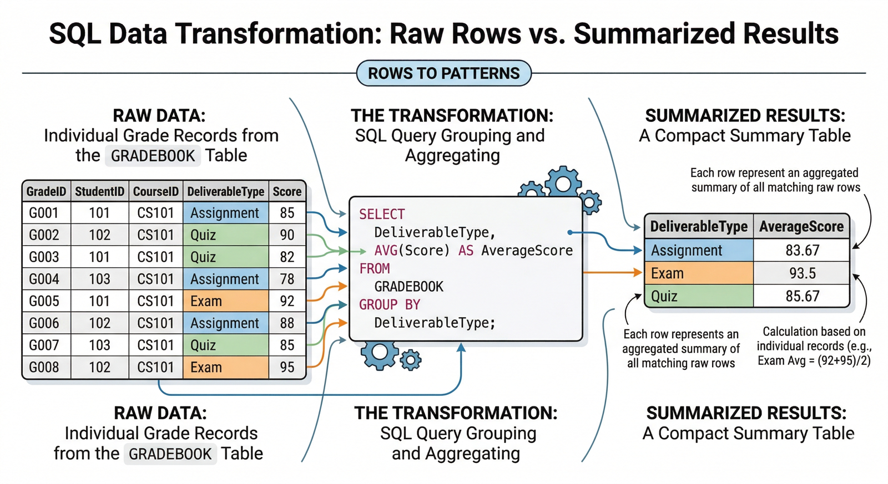
Figure 5.10: SQLite Tooling Environments. Compares browser-based SQLiteOnline (best for quick practice) with desktop DB Browser for SQLite (best for local file inspection and saved scripts).You may use either of these tools:
| Tool | Link | Type | Best Use |
|---|---|---|---|
| SQLiteOnline | https://sqliteonline.com/ | Browser-based SQL editor | Quick practice, in-class demos, and short SQL examples |
| DB Browser for SQLite | https://sqlitebrowser.org/ | Desktop application | Saved .db files, longer assignments, and visual database inspection |
Both tools let you create tables, insert records, run SQL queries, and inspect results. The SQL logic is the same. The difference is the working environment.
Use SQLiteOnline when you want the fastest start or are following an in-class demonstration. Use DB Browser for SQLite when you want to save a local .db file, inspect tables visually, or complete a longer assignment.
Keep a copy of your SQL script in a .sql file or document. Browser sessions can reset and local database files can be overwritten. Your script is the most portable record of your work.
Optional Preview: Supabase as a Cloud PostgreSQL Tool
For the required work in this chapter, use SQLite through SQLite Online or DB Browser for SQLite. Supabase is included here as a preview of a cloud-based PostgreSQL environment you may use later in the course. You do not need Supabase to complete this chapter's Let's Build unless your instructor specifically tells you to use it.
Figure 5.11: Supabase developer dashboard mapping the Table Editor, SQL Editor with an active query, and Database Schema Visualizer in a unified cloud interface.
Supabase is a cloud service that hosts a real PostgreSQL database and wraps it in a friendly web interface. You can create a project in a browser, run SQL, inspect tables, and connect the database to other tools. Its free tier is enough for coursework.
Think of Supabase as two things working together:
- A managed PostgreSQL database. Your tables, rows, and SQL all live in a real Postgres instance running in the cloud. Anything you learn here about PostgreSQL applies directly.
- A browser dashboard. Instead of installing a database server, you use Supabase's website to create tables, run SQL, and view data.
Inside a Supabase project, the panels you will use most are:
- Table Editor: a spreadsheet-style view for creating tables, adding columns, and editing rows by clicking. Good for quick setup and inspection.
- SQL Editor: a text area where you paste or type SQL statements (
CREATE,INSERT,SELECT, and more) and click Run. Results appear directly below. This is where most of this chapter's examples would go. - Database -> Schema Visualizer: a diagram of your tables and the relationships between them. Useful when you reach Chapter 6.
- Authentication, Storage, APIs: features for full applications. You can ignore them for this chapter.
A typical first session in Supabase is short: create a project, save the database password, open the SQL Editor, run a CREATE TABLE statement, insert rows, and inspect the result in Table Editor. Supabase may pause free-tier projects after inactivity, so export important SQL scripts to a .sql file if you use it.
Throughout the chapter, short platform notes flag the places where Access syntax differs from SQLite. If you are not using Access, you can read those notes for awareness and move on.
For interactive practice with every pattern in this chapter, the W3Schools SQL Tutorial is a useful supplement. Its in-browser editor lets you run SELECT, WHERE, ORDER BY, joins, and aggregation against a sample database. Expect small dialect differences, and use this chapter's platform notes when a spelling differs.
📊 Business Insight: One language travels across many engines
A retail analyst might prototype a query in SQLite, run a similar query against PostgreSQL, and then embed the result in a Power BI dashboard. The surrounding tools change. The SQL logic stays familiar.
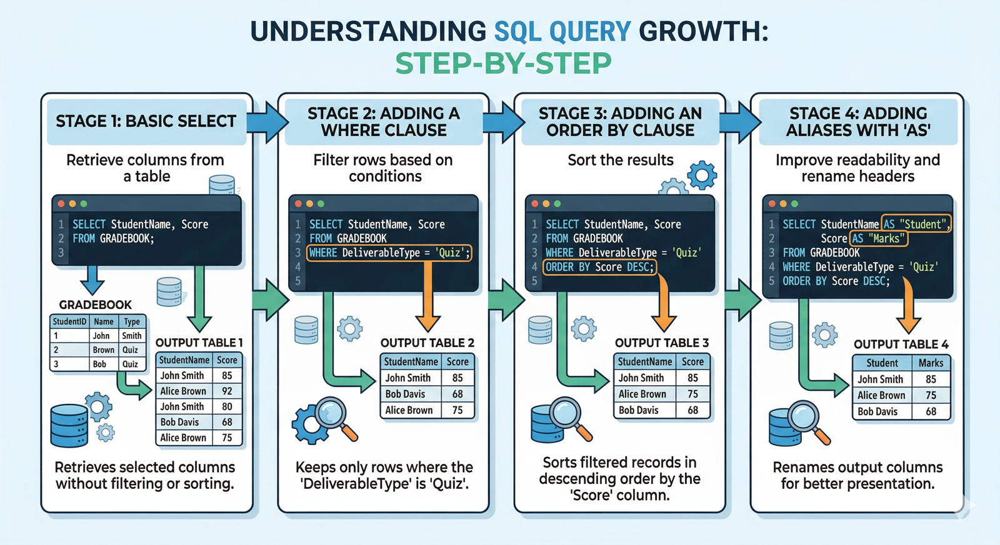
Figure 5.12: The Journey of a SQL Query. Traces a query from initial practice in a local SQLite file, to production deployment in a PostgreSQL database, to visualization in a Power BI dashboard.Part 2: The Chapter 5 Teaching Dataset
Why a Simplified Two-Table Dataset
This chapter uses a compact two-table teaching dataset. A fully normalized database is more realistic, but it can overload beginners too early. The goal here is to learn SQL syntax and query logic before adding more complex relational design. Chapter 6 returns to keys and relationships, Chapter 7 formalizes normalization, and Chapter 10 revisits database design in a larger system context.
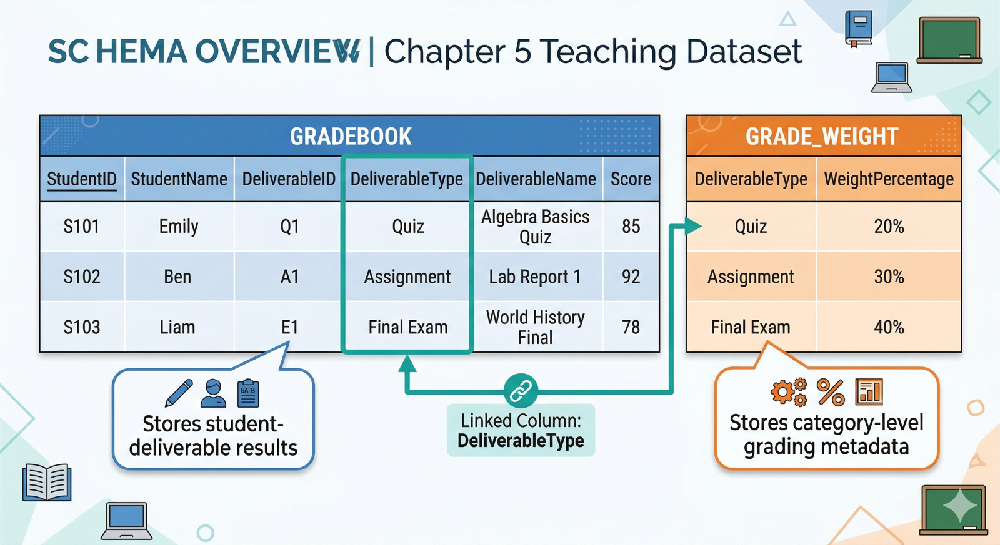
Figure 5.13: Chapter 5 Teaching Schema. RepresentsGRADEBOOK connected to GRADE_WEIGHT through the DeliverableType column, simplified for query practice.
The two tables are:
GRADEBOOK: one row per student-deliverable result.GRADE_WEIGHT: one row per deliverable category, with its weight and item count.
Together they support every operation in this chapter: creation, insertion, filtering, sorting, aggregation, and calculated fields, plus a first look at how two tables can be joined. Chapter 6 develops joins in full.
GRADEBOOK
GRADEBOOK is the main teaching table. It stores one row for each student-deliverable result.
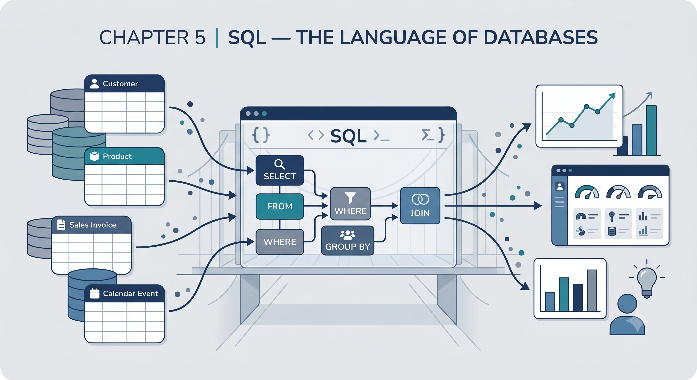
Figure 5.14: GRADEBOOK Table Structure. Highlights column fields such as RecordID, StudentID, and Score, showing their data types and roles.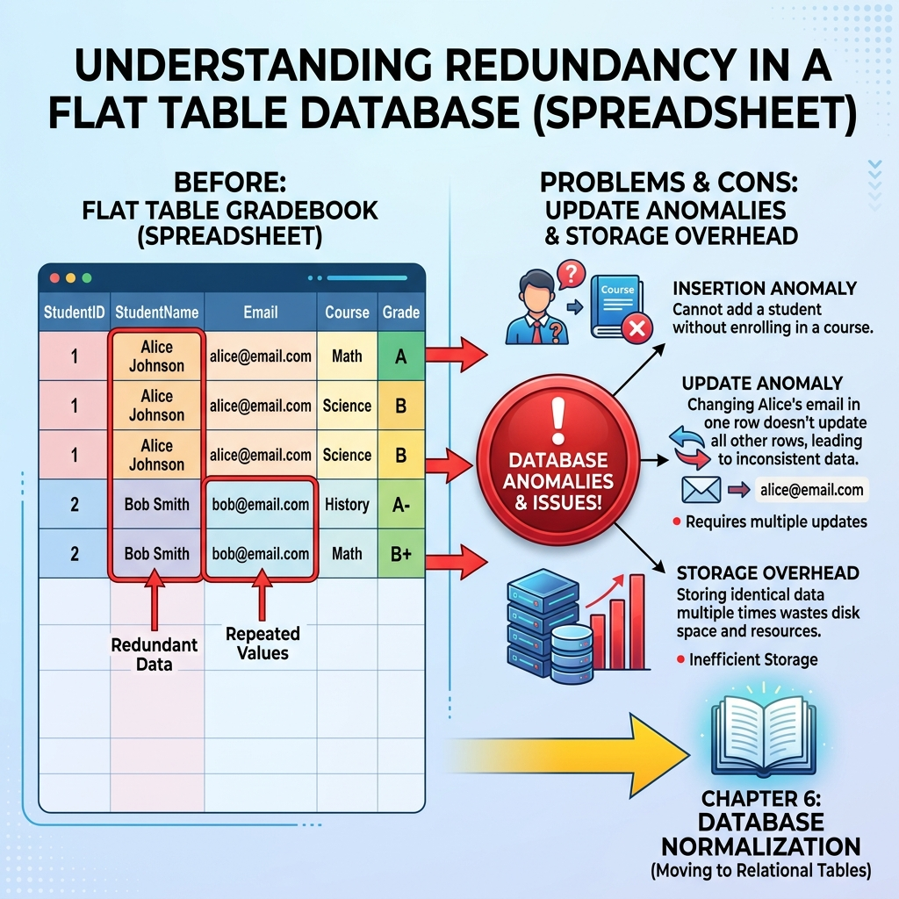
Figure 5.15: Flat-Table Redundancy Warning. Illustrates duplicate Student names and Emails repeated across gradebook records, highlighting update risks and pointing forward to related tables in Chapter 6.| Column | Data Type | Purpose |
|---|---|---|
RecordID |
INTEGER |
Unique identifier for each row |
StudentID |
TEXT |
Student identifier, such as S1001 |
FirstName |
TEXT |
Student first name |
LastName |
TEXT |
Student last name |
Email |
TEXT |
Student email address |
Birthday |
TEXT |
Student birth date in YYYY-MM-DD form |
DeliverableType |
TEXT |
Category such as Quiz, Homework, Exam, or Project |
DeliverableNumber |
INTEGER |
Sequence number within the category |
DueDate |
TEXT |
Due date for the deliverable in YYYY-MM-DD form |
Topic |
TEXT |
Topic or content label |
Score |
REAL |
Percentage-style score on a 0-100 scale |
A small sample:
| RecordID | StudentID | FirstName | LastName | DeliverableType | DeliverableNumber | Topic | Score |
|---|---|---|---|---|---|---|---|
| 1 | S1001 | Alice | Johnson | Quiz | 1 | Database Basics | 92 |
| 2 | S1002 | Brian | Lee | Quiz | 1 | Database Basics | 84 |
| 3 | S1003 | Carla | Mendez | Homework | 1 | Entity Design | 95 |
| 4 | S1001 | Alice | Johnson | Quiz | 2 | SQL Basics | 88 |
| 5 | S1002 | Brian | Lee | Quiz | 2 | SQL Basics | 77 |
| 6 | S1003 | Carla | Mendez | Exam | 1 | Midterm | 91 |
StudentID is stored as text, not as a number. The value S1001 looks numeric in places, but it is an identifier rather than a quantity, so it should never be averaged or summed. This matches the Chapter 4 build, where StudentID was created as Short Text in Access for the same reason.
This table is intentionally flat and somewhat redundant. It repeats student names and emails across grade records. That repetition makes SQL practice easier now, but it is not the final design ideal. Chapter 6 will explain the relationship problem and show how a fuller design splits this kind of data into related tables.
GRADE_WEIGHT
GRADE_WEIGHT stores category-level metadata about the grading scheme.
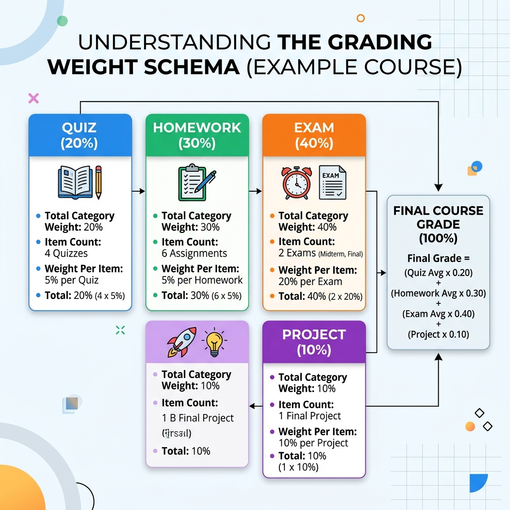
Figure 5.16: Grading Weight Scheme. Labeled category cards showing item count, category weight, and weight per item for Quiz, Homework, Exam, and Project.| Column | Data Type | Purpose |
|---|---|---|
DeliverableType |
TEXT |
Category such as Quiz or Exam |
ItemCount |
INTEGER |
Number of items in that category |
CategoryWeight |
REAL |
Percentage weight assigned to the category |
WeightPerItem |
REAL |
Percentage weight assigned to each item in that category |
A small sample:
| DeliverableType | ItemCount | CategoryWeight | WeightPerItem |
|---|---|---|---|
| Quiz | 4 | 20 | 5 |
| Homework | 3 | 30 | 10 |
| Exam | 2 | 40 | 20 |
| Project | 1 | 10 | 10 |
Together, GRADEBOOK and GRADE_WEIGHT allow students to practice single-table queries and to see one introductory example of joining two tables.
Questions These Tables Can Answer
With only two tables, students can already answer useful questions:
 Figure 5.17: Business Question Board. Maps common classroom questions, such as identifying struggling students or calculating averages, to the specific database fields needed to resolve them.
Figure 5.17: Business Question Board. Maps common classroom questions, such as identifying struggling students or calculating averages, to the specific database fields needed to resolve them.
- Which students scored below 80?
- What are the scores for Quiz 2?
- What is the average score by deliverable type?
- Which deliverable categories have the lowest average score?
- How much does each deliverable type contribute to the course grade?
- What is each student's approximate weighted contribution from recorded scores?
This is the core SQL learning pattern: start with a question, identify the table or tables, write the query, inspect the result, and revise as needed.
Part 3: Creating Tables and Inserting Data
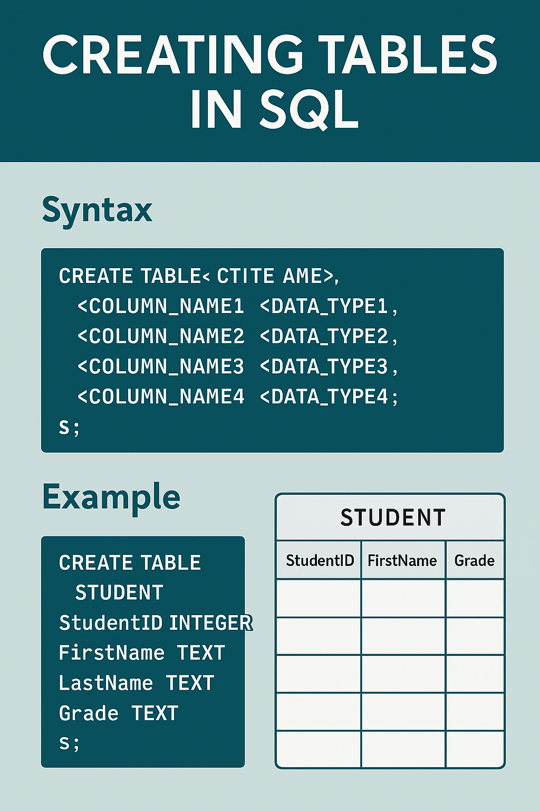
Figure 5.18: Structure-First Database Workflow. Illustrates the sequential workflow: defining structure withCREATE TABLE first, inserting records with INSERT INTO second, and verifying with SELECT * third.
✅ Good Practice: Define structure before loading rows
Create the table before you load data. A clear structure catches mistakes early; rushing to insert data into a half-defined table hides them.
Creating Tables with CREATE TABLE
CREATE TABLE defines a new table. It specifies the table name, column names, data types, and constraints.
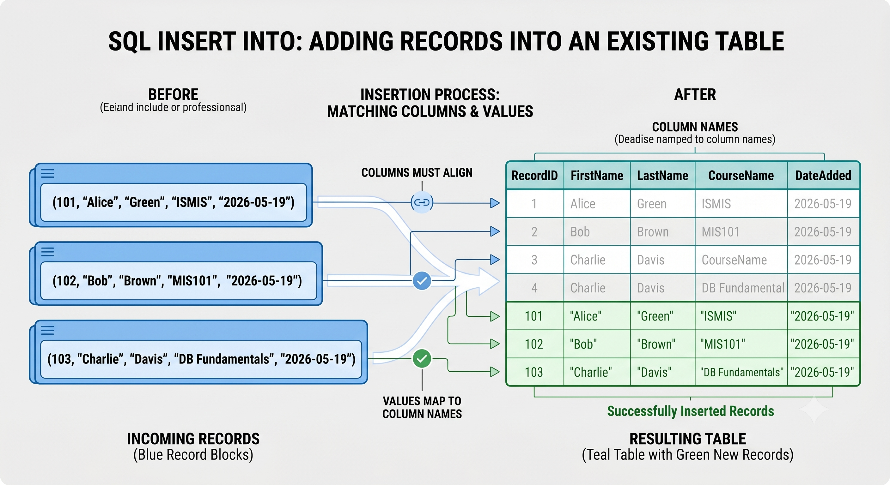
Figure 5.19: Blueprint of CREATE TABLE. Annotates the components of a database table creation statement: the command, table name, column names, data types, and primary key constraints.The general pattern is:
CREATE TABLE TableName (
ColumnName DataType Constraint,
ColumnName DataType Constraint
);
Each part matters.
| Part | Meaning |
|---|---|
CREATE TABLE |
Tells the DBMS to define a new table |
TableName |
Names the table |
ColumnName |
Names one field or attribute |
DataType |
States what kind of value belongs in the column |
Constraint |
Adds a rule, such as PRIMARY KEY or NOT NULL |
Creating the GRADEBOOK Table
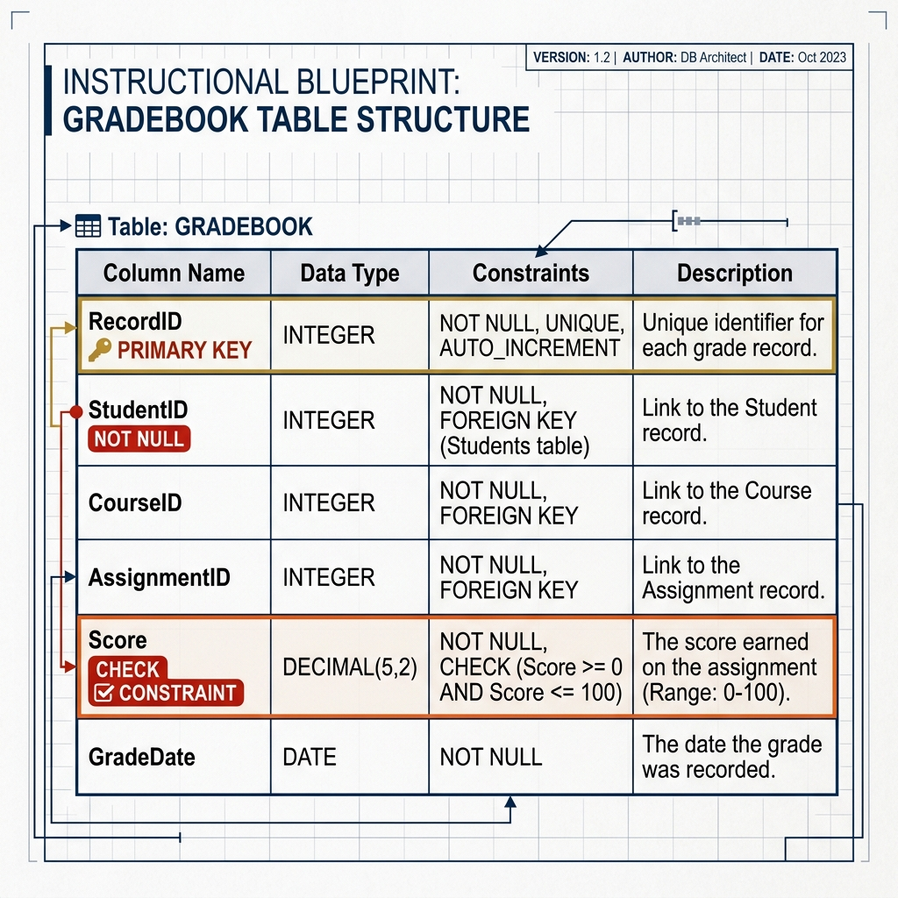
Figure 5.20: GRADEBOOK Table Definition. Visualizes the column types and constraint shields (NOT NULL, PRIMARY KEY, and Score CHECK between 0 and 100) defined during table creation.
CREATE TABLE GRADEBOOK (
RecordID INTEGER PRIMARY KEY,
StudentID TEXT NOT NULL,
FirstName TEXT NOT NULL,
LastName TEXT NOT NULL,
Email TEXT,
Birthday TEXT,
DeliverableType TEXT NOT NULL,
DeliverableNumber INTEGER NOT NULL,
DueDate TEXT,
Topic TEXT,
Score REAL CHECK (Score BETWEEN 0 AND 100)
);
This statement defines the structure before any records are inserted.
RecordIDis the primary key.StudentIDisTEXTbecause identifiers likeS1001are labels, not quantities.StudentID,FirstName,LastName,DeliverableType, andDeliverableNumberare required.Scoreis stored as a numeric value and uses aCHECKconstraint so values stay between 0 and 100. This is the SQL counterpart to the Chapter 4 Access validation ruleBetween 0 And 100.BirthdayandDueDateare stored as text inYYYY-MM-DDform, which SQLite sorts and compares correctly.
⚠️ Warning: SQLite dates are stored by convention
SQLite does not enforce a native DATE type the same way server-based DBMSs do. This chapter stores dates as TEXT in YYYY-MM-DD format so values stay readable and sortable.
Creating the GRADE_WEIGHT Table
Figure 5.21: GRADE_WEIGHT Schema. Connects category weight and item count metadata to calculations.
CREATE TABLE GRADE_WEIGHT (
DeliverableType TEXT PRIMARY KEY,
ItemCount INTEGER NOT NULL,
CategoryWeight REAL NOT NULL,
WeightPerItem REAL NOT NULL
);
Here, DeliverableType is the primary key because each deliverable category appears once. The other columns store category-level information.
Modifying a Table with ALTER TABLE
Database structures sometimes change. ALTER TABLE modifies an existing table.
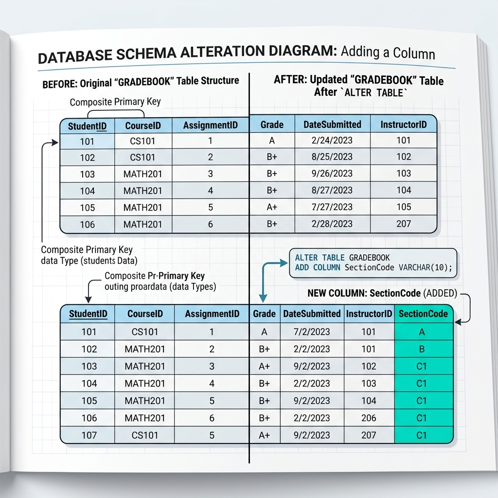
Figure 5.22: Modifying Structure with ALTER TABLE. Splits the GRADEBOOK table layout before and after adding theSectionCode column to demonstrate how structures expand.
ALTER TABLE GRADEBOOK
ADD COLUMN SectionCode TEXT;
This statement adds a new column named SectionCode to GRADEBOOK. In Microsoft Access, the same change is usually made through Design View; ALTER TABLE is the SQL equivalent.
Inserting Records with INSERT INTO
INSERT INTO adds rows to a table.
Figure 5.23: Column-to-Value Alignment. Illustrates why order and alignment matter when mapping the column list in INSERT INTO to the corresponding VALUES list.
The general pattern is:
INSERT INTO table_name (column1, column2, column3)
VALUES (value1, value2, value3);
Good insertion habits matter.
- Always list the columns explicitly.
- Keep column names and values in matching order.
- Put text and date values in single quotes.
- Do not rely on the physical order of columns in the table.
Inserting Rows into GRADEBOOK
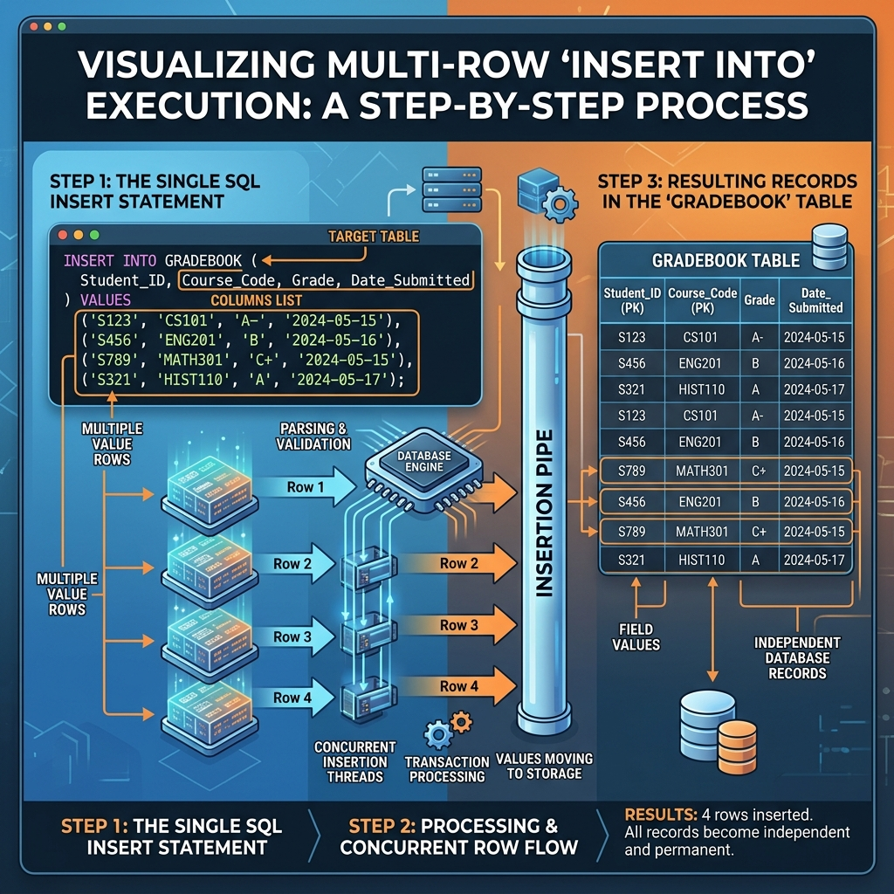
Figure 5.24: Step-by-Step Multi-Row INSERT. Displays how multiple values are inserted into the database in one query operation to form separate rows.INSERT INTO GRADEBOOK
(RecordID, StudentID, FirstName, LastName, Email, Birthday,
DeliverableType, DeliverableNumber, DueDate, Topic, Score)
VALUES
(1, 'S1001', 'Alice', 'Johnson', 'alice@university.edu', '2004-05-14',
'Quiz', 1, '2026-09-08', 'Database Basics', 92),
(2, 'S1002', 'Brian', 'Lee', 'brian@university.edu', '2003-11-22',
'Quiz', 1, '2026-09-08', 'Database Basics', 84),
(3, 'S1003', 'Carla', 'Mendez', 'carla@university.edu', '2004-02-09',
'Homework', 1, '2026-09-10', 'Entity Design', 95),
(4, 'S1001', 'Alice', 'Johnson', 'alice@university.edu', '2004-05-14',
'Quiz', 2, '2026-09-15', 'SQL Basics', 88),
(5, 'S1002', 'Brian', 'Lee', 'brian@university.edu', '2003-11-22',
'Quiz', 2, '2026-09-15', 'SQL Basics', 77),
(6, 'S1003', 'Carla', 'Mendez', 'carla@university.edu', '2004-02-09',
'Exam', 1, '2026-10-01', 'Midterm', 91);
This statement inserts six rows at once in SQLite and PostgreSQL-style syntax.
⚠️ Warning: Access inserts one row at a time
Microsoft Access does not support multi-row INSERT statements in the same way. In Access, insert one row at a time or load rows through Datasheet View.
Inserting Rows into GRADE_WEIGHT
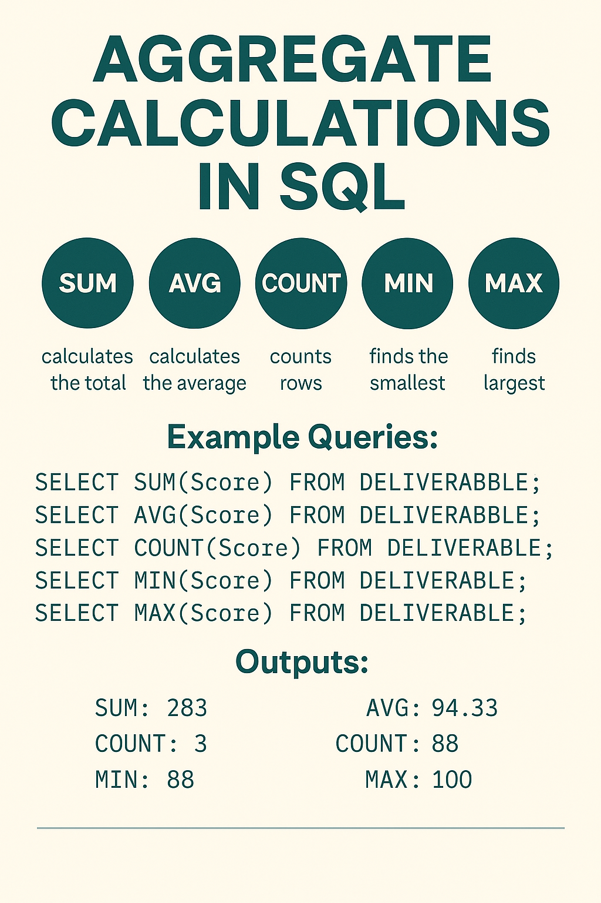
Figure 5.25: Loading Category Metadata. Visualizes the four grading categories flowing into theGRADE_WEIGHT table to store metadata for future joins and calculations.
INSERT INTO GRADE_WEIGHT
(DeliverableType, ItemCount, CategoryWeight, WeightPerItem)
VALUES
('Quiz', 4, 20, 5),
('Homework', 3, 30, 10),
('Exam', 2, 40, 20),
('Project', 1, 10, 10);
This table now stores the grading structure needed for later joins and weighted calculations.
Checking the Inserted Data
After inserting data, always verify that records were entered correctly.
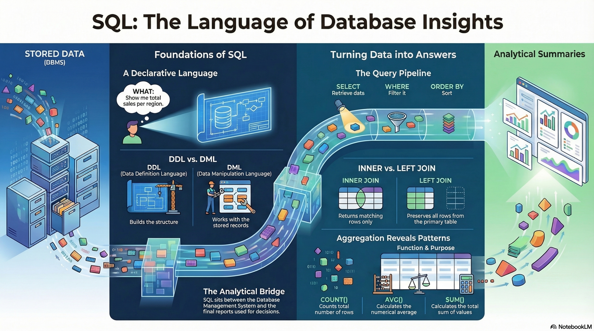
Figure 5.26: Post-Load Verification. A verification checklist showing howINSERT INTO is immediately followed by a SELECT * query to inspect records and catch errors early.
SELECT * FROM GRADEBOOK;
SELECT * FROM GRADE_WEIGHT;
This habit is simple but important. Before writing complicated queries, confirm that the tables contain what you think they contain.
✅ Good Practice: Inspect before you analyze
Run a quick SELECT * after every load. Catch a misaligned column or missing row right after insertion, not in the middle of a complex query.
Part 4: Querying Data with SELECT
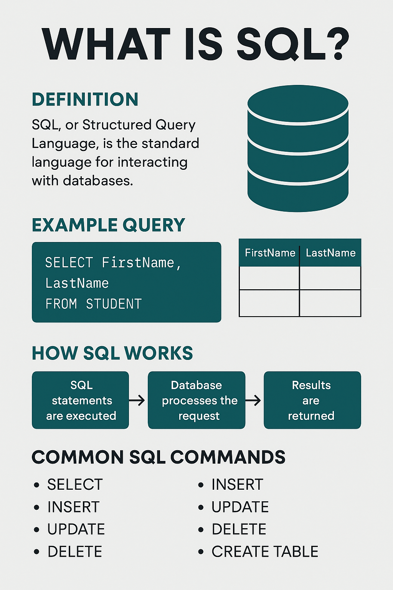
Figure 5.27: Query Clause Roadmap. Illustrates how SELECT, FROM, WHERE, and ORDER BY clauses stack together to build a complete database query.The Basic SELECT Pattern
SELECT retrieves data from a table. The simplest version retrieves all columns and all rows:
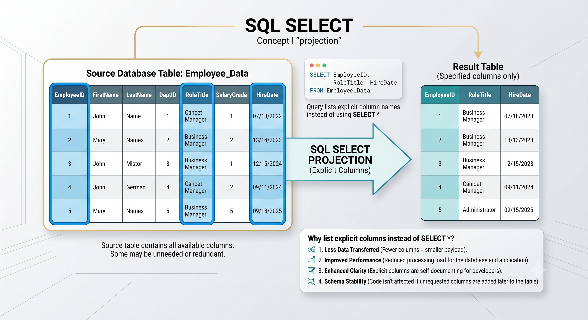
Figure 5.28: Projection in SQL. Demonstrates how a SELECT query performs column projection, retrieving only specified fields (e.g. FirstName, LastName) from a larger table.SELECT * FROM GRADEBOOK;
The asterisk means all columns. It is useful for quick inspection, but most professional queries list only the needed columns.
SELECT FirstName, LastName, Score
FROM GRADEBOOK;
✅ Good Practice: Name columns in final queries
Use SELECT * while exploring a new table. Switch to explicit column names for final queries, reports, and examples so the query's intent is clear.
Removing Duplicates with DISTINCT
The DISTINCT keyword removes duplicate values from query results.
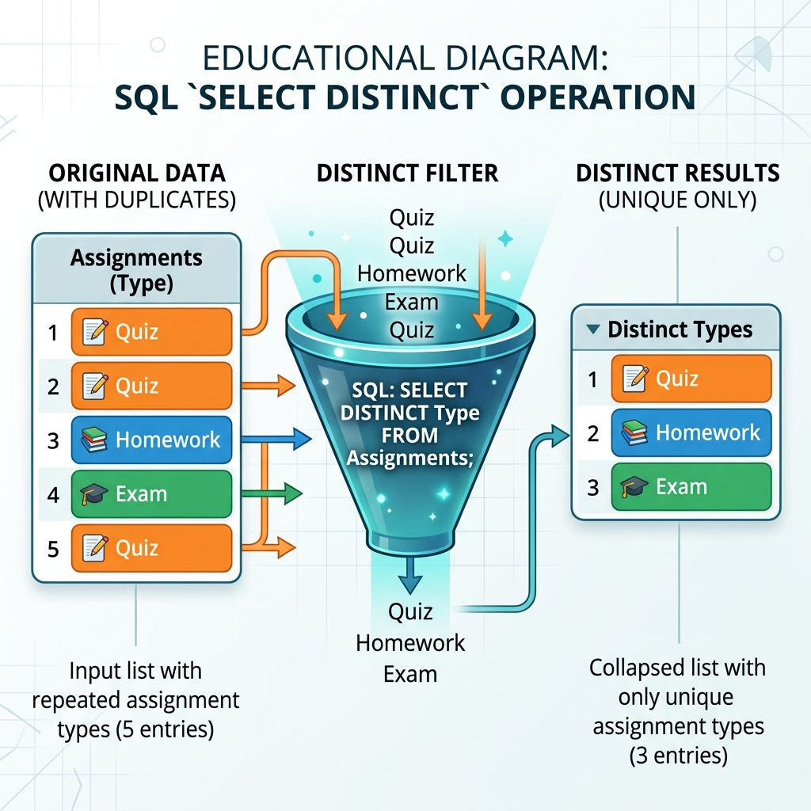
Figure 5.29: DISTINCT Value Collapse. Shows how redundant categories in a column are collapsed into a list of unique values.SELECT DISTINCT DeliverableType
FROM GRADEBOOK;
This query returns each deliverable type once. It is useful when you want to see the categories represented in a table.
Filtering Rows with WHERE
The WHERE clause limits query results to rows that meet a specific condition.
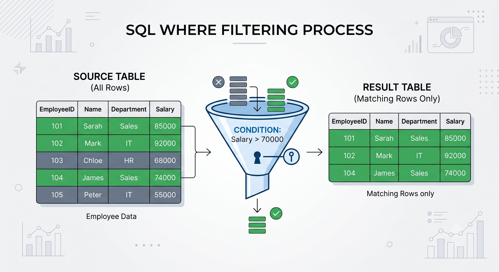
Figure 5.30: Row Selection via WHERE. A filter funnel showing rows from theGRADEBOOK table passing through the condition Score < 80, retaining only matching records in the output.
SELECT FirstName, LastName, Score
FROM GRADEBOOK
WHERE Score < 80;
Common comparison operators include:
| Operator | Meaning | Example |
|---|---|---|
= |
Equal to | DeliverableType = 'Quiz' |
<> |
Not equal to | DeliverableType <> 'Exam' |
< |
Less than | Score < 80 |
> |
Greater than | Score > 90 |
<= |
Less than or equal to | Score <= 80 |
>= |
Greater than or equal to | Score >= 90 |
A small operator change can change the answer. Score <= 80 includes a score of exactly 80, while Score < 80 does not.
Handling Missing Values with NULL
NULL represents a missing or unknown value. It is not zero. It is not an empty string. It is the absence of a stored value, which is why it cannot be compared with ordinary equality operators.
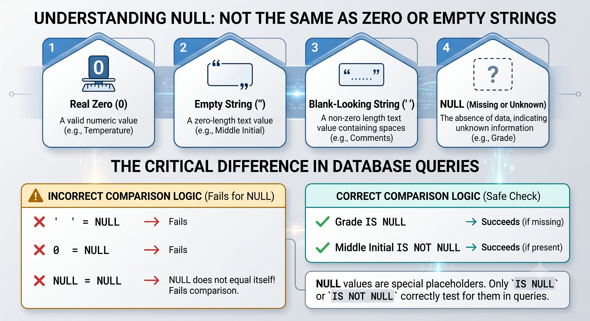
Figure 5.31: NULL handling in SQL. Contrasts zero, blank text, and NULL, illustrating why traditional equality (=) fails and IS NULL or IS NOT NULL must be used.
This does not work as expected:
SELECT StudentID, FirstName, LastName, Email
FROM GRADEBOOK
WHERE Email = NULL;
Use IS NULL instead:
SELECT StudentID, FirstName, LastName, Email
FROM GRADEBOOK
WHERE Email IS NULL;
To find rows where a value exists, use IS NOT NULL:
SELECT RecordID, StudentID, DeliverableType, Score
FROM GRADEBOOK
WHERE Score IS NOT NULL;
❌ Avoid: Do not ignore NULL in aggregates
Aggregate functions usually skip NULL values.
COUNT(*)counts rows, even if some columns containNULL.COUNT(Score)counts only rows whereScoreis notNULL.AVG(Score)averages only non-NULLscores.
That behavior is useful, but it can hide missing data.
Always ask whether a missing value means not applicable, not entered yet, or unknown.
Combining Conditions with AND, OR, and NOT
Logical operators allow more precise filters.
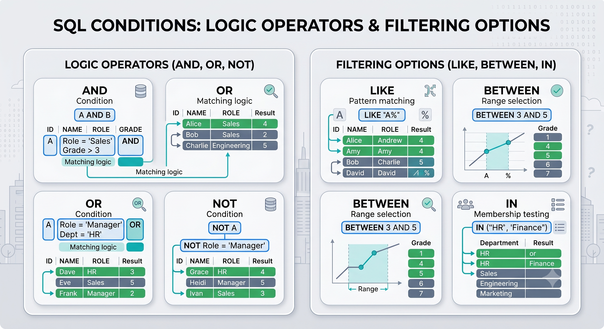
Figure 5.32: Logical Operators. A logic-gate diagram showing howAND narrows results, OR widens results, and NOT excludes categories.
Use AND when both conditions must be true:
SELECT FirstName, LastName, DeliverableType, Score
FROM GRADEBOOK
WHERE DeliverableType = 'Quiz'
AND Score < 80;
Use OR when either condition may be true:
SELECT FirstName, LastName, DeliverableType, Score
FROM GRADEBOOK
WHERE DeliverableType = 'Quiz'
OR DeliverableType = 'Exam';
Use NOT to exclude a condition:
SELECT FirstName, LastName, DeliverableType, Score
FROM GRADEBOOK
WHERE NOT DeliverableType = 'Homework';
💡 Tip: Put one condition per line
When combining conditions, put each condition on its own line. SQL is much easier to read and debug when the logic is visually organized.
Pattern Matching with LIKE, BETWEEN, and IN
LIKE searches for text patterns. The percent sign % matches zero or more characters; the underscore _ matches exactly one.
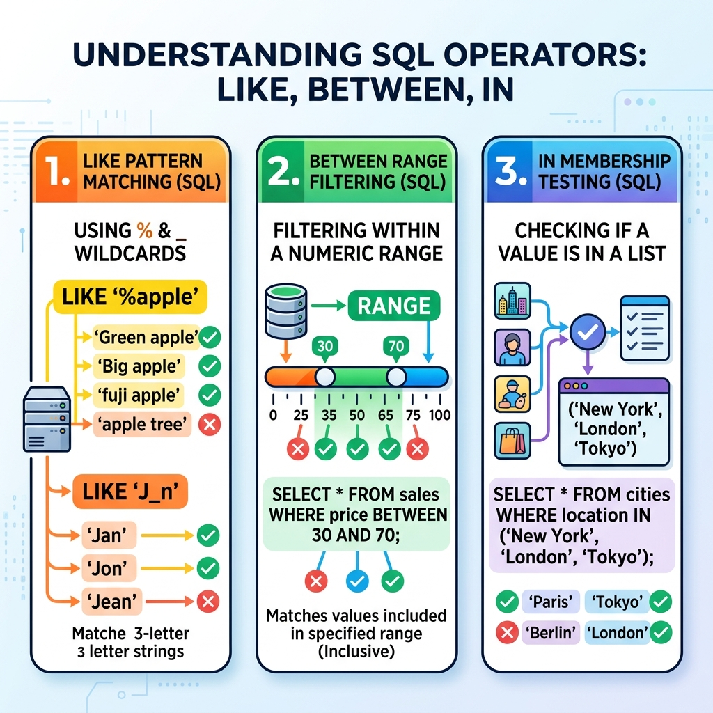
Figure 5.33: Pattern Matching and Range Operators. Illustrates LIKE wildcard searches, BETWEEN range limits, and IN list testing.SELECT FirstName, LastName, Email
FROM GRADEBOOK
WHERE Email LIKE '%@university.edu';
SELECT DeliverableType
FROM GRADEBOOK
WHERE DeliverableType LIKE 'Q_iz';
BETWEEN tests a numeric or date range:
SELECT FirstName, LastName, Score
FROM GRADEBOOK
WHERE Score BETWEEN 80 AND 90;
IN tests membership in a list:
SELECT FirstName, LastName, DeliverableType, Score
FROM GRADEBOOK
WHERE DeliverableType IN ('Quiz', 'Exam');
All three operators make conditions shorter and easier to read than long chains of AND and OR.
Sorting Results with ORDER BY
The ORDER BY clause controls the order in which query results appear. DESC sorts from high to low; ASC sorts from low to high and is the default.
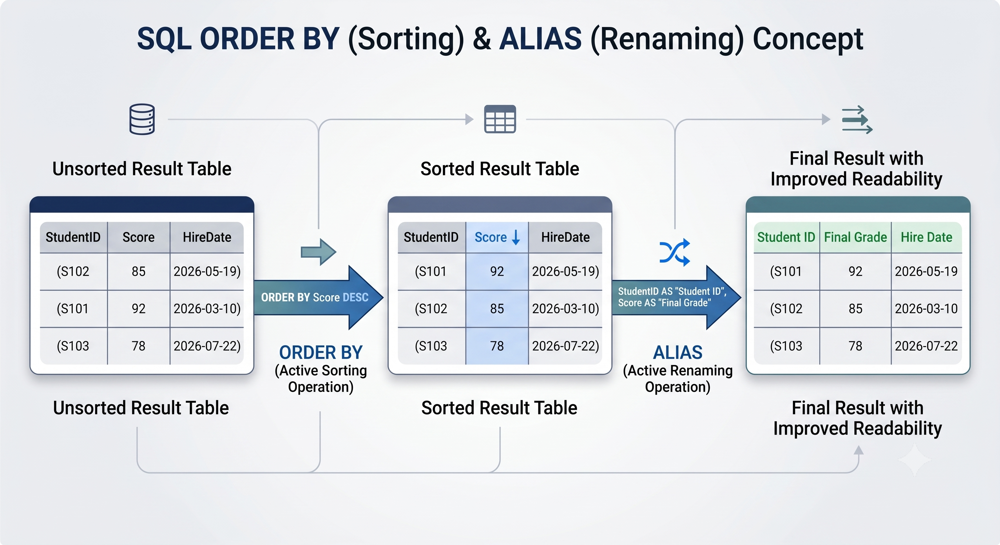
Figure 5.34: Sorting and Aliases. Shows a query result sorted byScore DESC and then by LastName ASC as a tiebreaker, with column headers customized via aliases.
SELECT FirstName, LastName, Score
FROM GRADEBOOK
ORDER BY Score DESC;
You can sort by more than one column. The second column acts as a tiebreaker.
SELECT FirstName, LastName, Score
FROM GRADEBOOK
ORDER BY Score DESC, LastName ASC;
Renaming Output with Aliases
An alias gives an output column or table a temporary name.
Sorting and Aliases (Figure 5.34 above) illustrates how column headers are customized via aliases.
SELECT FirstName || ' ' || LastName AS StudentName,
DeliverableType AS Category,
Score AS Result
FROM GRADEBOOK;
Aliases improve readability. They change the label in the output, not the stored data. In Microsoft Access, the same text-combination idea uses & instead of SQLite's ||:
SELECT FirstName & ' ' & LastName AS StudentName
FROM GRADEBOOK;
Aliasing Tables, Not Just Columns
AS does double duty: it renames output columns, and it also gives a table a short temporary name. A table alias lets you refer to a table by a one- or two-letter nickname inside the same query.
SELECT g.FirstName,
g.LastName,
g.Score
FROM GRADEBOOK AS g
WHERE g.Score < 80;
Here GRADEBOOK AS g names the table g, so g.Score means the Score column from GRADEBOOK. On a single table this is optional and mostly a convenience. It becomes genuinely useful once a query touches more than one table, because every column can then be traced to the exact table it came from. You will see that payoff in the next part's first look at joins, and Chapter 6 relies on table aliases throughout.
💡 Tip: AS names columns and tables
Use AS to label output columns, such as Score AS Result, and to nickname tables, such as GRADEBOOK AS g. Writing AS keeps the intent clear.
Working with Dates
Dates appear all over the teaching dataset: DueDate for each deliverable and Birthday for each student. SQLite has no dedicated date type, so this chapter stores dates as text in YYYY-MM-DD form (for example, '2026-09-08'). That format is not arbitrary: because the year comes first, then the month, then the day, the values sort and compare correctly as plain text.
Filtering by a date uses the same comparison operators as numbers. Quotes are required because the value is stored as text:
SELECT Topic, DueDate
FROM GRADEBOOK
WHERE DueDate >= '2026-09-15';
Selecting a date range is cleanest with BETWEEN:
SELECT Topic, DueDate
FROM GRADEBOOK
WHERE DueDate BETWEEN '2026-09-01' AND '2026-09-30';
Sorting by date works because of the YYYY-MM-DD ordering:
SELECT Topic, DueDate
FROM GRADEBOOK
ORDER BY DueDate ASC;
You can also pull pieces out of a date or calculate with it, but the exact functions differ by platform. In SQLite, strftime('%Y', Birthday) extracts the year. Part 6 uses this to estimate a student's age, and the Access vs. SQLite syntax table in Part 1 lists the matching Access expression (DateDiff).
⚠️ Warning: Date literals vary across engines
SQLite and PostgreSQL accept dates as quoted text, such as '2026-09-08'. Microsoft Access wraps date literals in number signs, such as #2026-09-08#. The comparison logic stays the same.
If a date is stored as 09/08/2026, text sorting can break because the month appears first. With YYYY-MM-DD, the most significant part (the year) comes first, so chronological order and text order match.
Building a Query Step by Step
A readable SQL query usually grows in stages. Start with retrieval, then add filtering, sorting, and labels one clause at a time:
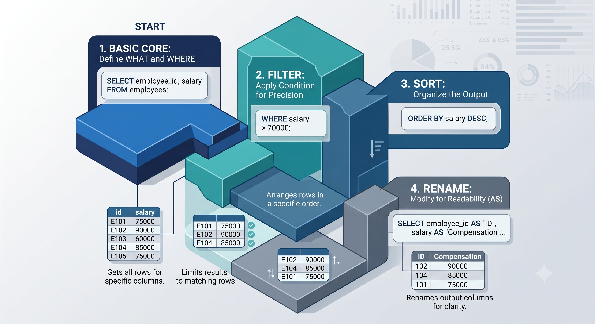
Figure 5.35: Step-by-Step Query Construction. Visualizes building a complex query in layers, starting with columns, then filtering, and finally sorting.SELECT FirstName || ' ' || LastName AS StudentName,
Score AS CurrentScore
FROM GRADEBOOK
WHERE Score < 80
ORDER BY Score ASC;
Run the query after each addition. If the result becomes wrong, you know which clause caused it.
🔑 Key Takeaway: Build queries in layers
A basic query becomes more powerful by adding clauses one at a time, not by writing everything at once.
Part 5: A First Look at Joins
So far every query has read from one table. But the teaching dataset has two tables, and some questions need both. This part gives you a single introductory example. Chapter 6 then develops joins in full once you understand why data is split across related tables.
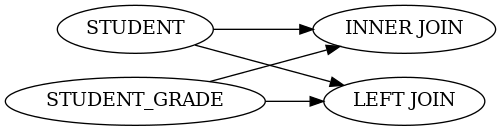
Figure 5.36: Reconstructing Context with Joins. Shows grade rows dynamically receiving metadata, such as item weights, from the related weight table at query time.Why You Would Join Two Tables
GRADEBOOK stores student performance records. GRADE_WEIGHT stores the weight of each deliverable category. A join connects two tables on a shared column so a single query can report information from both, without copying the category weight into every grade row.
The two tables share DeliverableType, so that is the column the match is built on.
One Example: INNER JOIN
An INNER JOIN returns rows where a matching value exists in both tables. Here it attaches each deliverable's WeightPerItem to the matching grade row, which lets the query calculate how much each score contributes to the final grade (Score * WeightPerItem / 100):
SELECT g.FirstName,
g.LastName,
g.DeliverableType,
g.Score,
w.WeightPerItem,
ROUND(g.Score * w.WeightPerItem / 100.0, 2) AS WeightedContribution
FROM GRADEBOOK AS g
INNER JOIN GRADE_WEIGHT AS w
ON g.DeliverableType = w.DeliverableType;
Notice the table aliases from Part 4 at work: GRADEBOOK AS g and GRADE_WEIGHT AS w let each column say exactly which table it comes from (g.Score, w.WeightPerItem). The ON clause states the matching rule. A score of 92 on a quiz worth 5 percent contributes 4.60 percentage points.
🔑 Key Takeaway: A join combines tables at query time
A join connects related tables on a shared column so one query can use data from both. Chapter 6 explains the four questions to ask before every join and why joins are the payoff of relational design.
Joins fit naturally with the relational design ideas in Chapter 6, so the full treatment lives there: LEFT JOIN, finding unmatched rows, comparing join types, and joining three or more tables.
Part 6: Aggregation, Grouping, and Calculated Results
 Figure 5.37: Rows-to-Summary Aggregation. Detailed records from the
Figure 5.37: Rows-to-Summary Aggregation. Detailed records from the GRADEBOOK table are compressed into summary metrics such as counts, averages, and totals.
Why Aggregation Matters
Listing rows is useful, but business analysis often requires summaries. An instructor may need the class average, the average by deliverable type, the number of recorded scores, the highest and lowest scores, or the average score for each student.
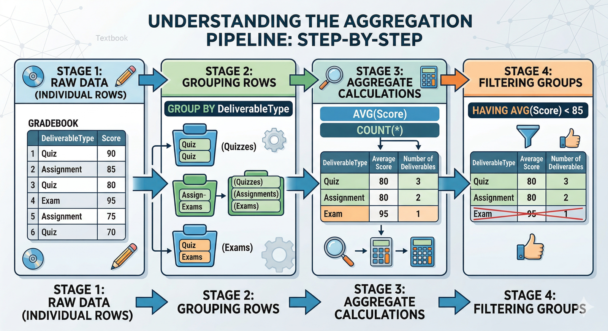
Figure 5.38: The SQL Aggregation Pipeline. Displays raw grade records at the base, grouping and filtering in the middle, and summary outputs such as class averages at the top.Aggregation is where SQL starts to become analytical.
Aggregate Functions
Figure 5.39: Core Aggregate Functions. Labeled cards for COUNT(), AVG(), SUM(), MIN(), and MAX() explaining what business questions they answer.
| Function | Purpose | Example Question |
|---|---|---|
COUNT() |
Counts rows or non-missing values | How many scores are recorded? |
AVG() |
Calculates an average | What is the average score? |
SUM() |
Calculates a total | What is the total weighted contribution? |
MIN() |
Finds the smallest value | What is the lowest score? |
MAX() |
Finds the largest value | What is the highest score? |
Example:
SELECT AVG(Score) AS AverageScore
FROM GRADEBOOK;
This returns one overall average.
Grouping with GROUP BY
GROUP BY forms groups before aggregation. Without GROUP BY, a query returns one overall summary. With GROUP BY, it returns one summary per group.
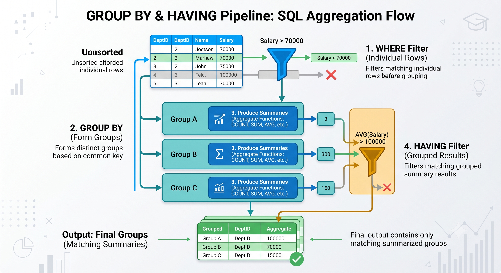
Figure 5.40: Grouping Buckets. Illustrates how records are grouped into buckets, such as Quiz and Homework, before aggregate functions run on each bucket.SELECT DeliverableType,
AVG(Score) AS AverageScore
FROM GRADEBOOK
GROUP BY DeliverableType;
This returns one average per deliverable type.
SELECT StudentID,
FirstName,
LastName,
AVG(Score) AS AverageScore
FROM GRADEBOOK
GROUP BY StudentID, FirstName, LastName;
This returns one average per student.
Filtering Groups with HAVING
WHERE filters rows before grouping. HAVING filters groups after grouping.
Figure 5.41: WHERE vs. HAVING execution. Shows that WHERE filters raw records before grouping, while HAVING filters aggregated summaries after grouping.
SELECT DeliverableType,
AVG(Score) AS AverageScore
FROM GRADEBOOK
GROUP BY DeliverableType
HAVING AVG(Score) < 85;
This query calculates the average score for each deliverable type, then keeps only the groups whose average is below 85.
| Clause | Filters | Used Before or After Grouping? |
|---|---|---|
WHERE |
Individual rows | Before grouping |
HAVING |
Groups or aggregate results | After grouping |
Practical Summary Queries
 Figure 5.42: Summary Outputs Mockup. Visualizes calculated results such as record counts, maximum scores, and category averages as analytical dashboard cards.
Figure 5.42: Summary Outputs Mockup. Visualizes calculated results such as record counts, maximum scores, and category averages as analytical dashboard cards.
-- Count records by deliverable type
SELECT DeliverableType, COUNT(*) AS RecordCount
FROM GRADEBOOK
GROUP BY DeliverableType;
-- Highest score by topic
SELECT Topic, MAX(Score) AS HighestScore
FROM GRADEBOOK
GROUP BY Topic;
-- Average quiz score
SELECT AVG(Score) AS AverageQuizScore
FROM GRADEBOOK
WHERE DeliverableType = 'Quiz';
Calculated Columns
SQL can calculate new output values without changing stored data.
Figure 5.43: Calculated Columns Output. Demonstrates how stored scores feed into a temporary calculated column in memory without changing the source table.
SELECT FirstName,
LastName,
Score,
Score + 5 AS BonusScore
FROM GRADEBOOK;
BonusScore appears in the result, but it is not stored in the table.
A Weighted Contribution Example
Calculated columns become more powerful when the calculation draws on a second table. If Score is a percentage and WeightPerItem is the percentage weight of one deliverable, then a deliverable's weighted contribution is:
Figure 5.44: Weighted score calculations. Shows how scores and individual item weights are multiplied and divided to calculate a deliverable's weighted contribution to the final grade.
Score * WeightPerItem / 100
WeightPerItem lives in GRADE_WEIGHT, not GRADEBOOK, so this calculation needs the INNER JOIN introduced in Part 5. That single example produces exactly this WeightedContribution column. Chapter 6 builds on it to compute a full course-grade summary across all of a student's deliverables.
Text and Date Expressions
SQL can also combine and transform text and date values.
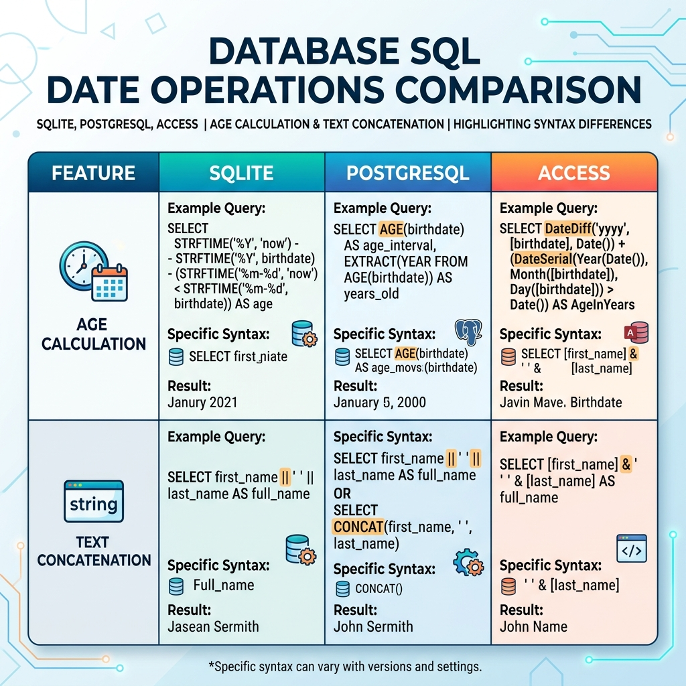
Figure 5.45: Platform SQL Date Operations. Contrasts how SQLite, PostgreSQL, and Access calculate ages and perform text concatenation side by side.-- Combine text into a readable label
SELECT FirstName || ' ' || LastName AS StudentName,
DeliverableType || ' ' || DeliverableNumber AS DeliverableLabel
FROM GRADEBOOK;
-- Approximate age from Birthday (SQLite)
SELECT DISTINCT StudentID, FirstName, LastName,
strftime('%Y', 'now') - strftime('%Y', Birthday) AS ApproxAge
FROM GRADEBOOK;
This builds on the Working with Dates subsection in Part 4: there you filtered and sorted dates; here you extract the year from one to estimate an age. Date syntax varies across platforms. In Access, the same age calculation uses DateDiff('yyyy', Birthday, Date()). The Appendix shows the Access version side by side with SQLite for reference.
Conditional Logic with CASE
A CASE expression returns different values based on conditions.
Calculated Outputs (Figure 5.43 above) demonstrates CASE conditional logic mapping numeric scores to performance thresholds.
SELECT FirstName,
LastName,
Score,
CASE
WHEN Score >= 90 THEN 'High Performance'
WHEN Score >= 80 THEN 'On Track'
ELSE 'Needs Attention'
END AS PerformanceBand
FROM GRADEBOOK;
CASE turns numeric values into interpretable labels.
Complete Student Summary Example
This query combines grouping, aggregation, rounding, and conditional logic.
Calculated Outputs (Figure 5.43 above) visualizes student grade records grouped, averaged, rounded, and labeled in a multi-stage summary.
SELECT FirstName || ' ' || LastName AS StudentName,
ROUND(AVG(Score), 2) AS AverageScore,
CASE
WHEN AVG(Score) >= 90 THEN 'High Performance'
WHEN AVG(Score) >= 80 THEN 'On Track'
ELSE 'Needs Attention'
END AS PerformanceBand
FROM GRADEBOOK
GROUP BY StudentID, FirstName, LastName;
The result is one row per student with an average score and a performance label.
🔑 Key Takeaway: Aggregation turns rows into meaning
Aggregation and calculated expressions turn rows into useful summaries. The same table can produce a roster, a class average, or an at-risk list depending on how you group and label the data.
Looking Ahead
Figure 5.46: The SQL learning pathway. Shows how basic SQL queries branch into database normalization, advanced analytics, data governance, and dashboard integration.
This chapter introduced the core grammar of SQL. You learned how to create tables, insert records, retrieve rows, filter results, work with dates, sort output, alias columns and tables, preview a join, summarize patterns, and calculate new fields.
Chapter 6 returns to relationships. The flat GRADEBOOK table is helpful for learning SQL, but it repeats student and deliverable information. The next design step is to separate different entities into related tables and connect them through keys. That richer structure reduces redundancy and makes databases more reliable over time. It is also where joins earn their keep, which is why Chapter 6 develops them in full.
Later chapters build on this SQL foundation with:
- relationships, referential integrity, and joins in depth (Chapter 6);
- normalization and dependency analysis (Chapter 7);
- advanced SQL patterns such as complex joins, subqueries, CTEs, and window functions (Chapter 9);
- database design in a larger information-system context (Chapter 10);
- indexes, performance tuning, stored procedures, triggers, and views (Chapter 13);
- business intelligence and dashboards (Chapter 14);
- analytical reporting and managerial decision-making (Chapters 12 and 15).
SQL will return throughout the book because almost every later database skill depends on the ability to ask clear questions of structured data.
For extra practice between now and the next SQL-heavy chapter, use the W3Schools SQL Tutorial. The Try it Yourself editors let you run SELECT, joins, GROUP BY, and other clauses against a sample database directly in the browser.
Appendix: Applying These Concepts to the Grading Database
This appendix shows the chapter's ideas at work in the Let's Build grading database. Each section reuses the GRADEBOOK and GRADE_WEIGHT tables defined in Part 2 and Part 3.
Figure 5.47: Appendix Roadmap. Maps the appendix examples back to the core chapter concepts: Access-style inserts and side-by-side age expressions.
A1. Inserting Rows One at a Time (Access-Friendly)
Multi-row INSERT works in SQLite and PostgreSQL. Microsoft Access expects one row per statement. In the Chapter 4 build, RecordID is an Access AutoNumber field, so it is generated automatically and you do not type a value for it. The first two rows from Part 3 would look like this in Access form:
Figure 5.48: SQLite vs. Access insertions. Compares multi-row SQL insert statements in SQLite with single-row, AutoNumber-compliant insert statements in Access.
INSERT INTO GRADEBOOK (StudentID, FirstName, LastName, Email, Birthday,
DeliverableType, DeliverableNumber, DueDate, Topic, Score)
VALUES ('S1001', 'Alice', 'Johnson', 'alice@university.edu', #2004-05-14#,
'Quiz', 1, #2026-09-08#, 'Database Basics', 92);
INSERT INTO GRADEBOOK (StudentID, FirstName, LastName, Email, Birthday,
DeliverableType, DeliverableNumber, DueDate, Topic, Score)
VALUES ('S1002', 'Brian', 'Lee', 'brian@university.edu', #2003-11-22#,
'Quiz', 1, #2026-09-08#, 'Database Basics', 84);
Notice three Access differences: RecordID is omitted so Access can generate it as AutoNumber, dates are wrapped in # rather than quotes, and each row needs its own statement.
A2. A Side-by-Side Age Calculation
Platform SQL Date Operations (Figure 5.45 above) maps the SQLite, PostgreSQL, and Access age expressions side by side.
| Platform | Approximate age expression |
|---|---|
| SQLite | strftime('%Y','now') - strftime('%Y', Birthday) |
| PostgreSQL | EXTRACT(YEAR FROM AGE(Birthday)) |
| Access | DateDiff('yyyy', Birthday, Date()) |
All three return a rough integer age based on year only. None checks whether the birthday has occurred yet this year, so the value can be one year high for several months.
Key Concepts
 Figure 5.49: Structured Query Language concept map. Visualizes relationships between SQL families (DDL/DML/DQL), basic querying clauses, joins, and aggregations.
Figure 5.49: Structured Query Language concept map. Visualizes relationships between SQL families (DDL/DML/DQL), basic querying clauses, joins, and aggregations.
| Term | Meaning |
|---|---|
| SQL | The standard language for working with relational databases |
| Declarative language | A language in which users state the desired result rather than the step-by-step procedure |
| DDL | SQL statements that define or change database structure |
| DML | SQL statements that insert, update, or delete stored records |
| DQL | SQL statements that retrieve data, especially SELECT |
| TCL | SQL statements that manage transactions, such as COMMIT and ROLLBACK |
| Table | A structured set of rows and columns |
| Row | One record in a table |
| Column | One field or attribute in a table |
| Query | A request for data or a data-related operation |
| Filter | A condition that limits which rows are returned |
| Sort | The order in which result rows appear |
| Alias | A temporary name used for a column or table in a query |
| NULL | A marker for a missing or unknown value |
| Join | A query operation that combines related tables |
| Aggregate function | A function such as COUNT(), AVG(), or SUM() that summarizes rows |
| GROUP BY | A clause that forms groups before aggregation |
| HAVING | A clause that filters grouped results |
| Expression | A calculation or transformation performed in a query |
| CASE | Conditional logic used to return different values based on conditions |
Chapter Summary
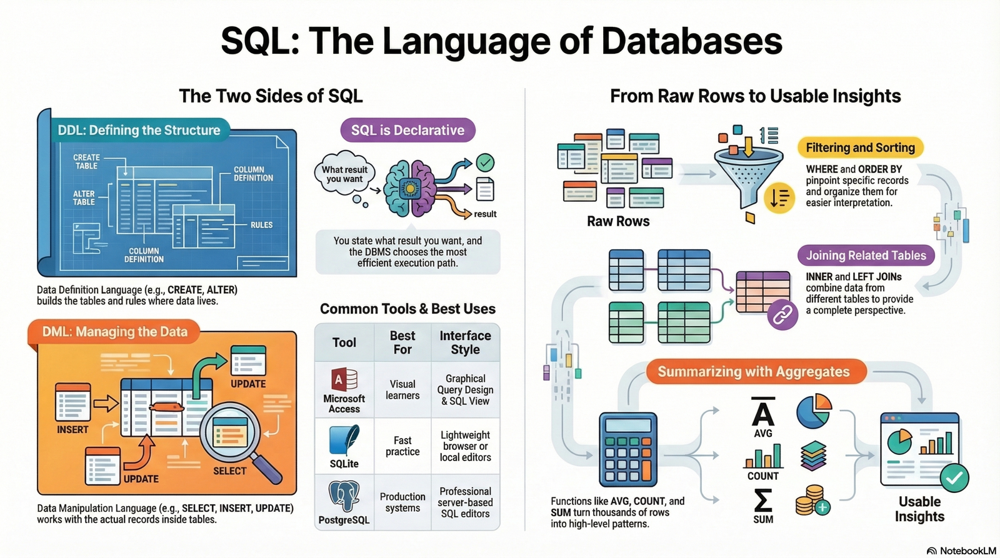
Figure 5.50: Chapter 5 Visual Summary. Recaps the path from raw tables to query logic, joins, grouping, calculations, and analytical insights.Chapter 5 introduced SQL as the language used to communicate with relational databases. Building on Chapter 4, the chapter moved from the question of where data lives to the question of how people retrieve, interpret, and summarize stored data.
The chapter began by explaining SQL as a declarative language. Instead of programming every retrieval step, users state the result they want and the DBMS decides how to produce it. That makes SQL a powerful bridge between business questions and database results.
A short tour of Microsoft Access, SQLite, and PostgreSQL/Supabase showed that the same SQL logic runs across many environments, with only minor syntax differences.
The chapter then introduced a simplified two-table teaching dataset: GRADEBOOK and GRADE_WEIGHT. Using these tables, you learned how to define structure with CREATE TABLE, populate records with INSERT INTO, inspect data with SELECT, filter rows with WHERE, handle missing values with IS NULL, work with dates stored as text, sort results with ORDER BY, and improve output readability with column and table aliases (AS).
You also saw where SQL lives inside Microsoft Access and how a few syntax details differ from SQLite. A first look at joins showed the basic shape of an INNER JOIN; Chapter 6 develops joins in full alongside the relational design that motivates them. Aggregation then showed how SQL moves from listing rows to summarizing patterns through COUNT(), AVG(), SUM(), MIN(), MAX(), GROUP BY, and HAVING. Calculated fields and CASE expressions showed how SQL can produce more interpretable outputs without changing the stored data.
The appendix put these ideas to work on the grading database, showing the Access-friendly form of INSERT and a side-by-side age calculation across platforms.
Chapter 9 picks the thread back up with more advanced SQL patterns such as complex joins, subqueries, CTEs, and window functions. Those tools build directly on the foundation you established here.
The central lesson is simple: SQL is more than technical syntax. It is a disciplined way to ask structured questions. Better questions lead to better queries, and better queries lead to more useful results.
References
Connolly, T., & Begg, C. (2015). Database systems: A practical approach to design, implementation, and management (6th ed.). Pearson.
Date, C. J. (2004). An introduction to database systems (8th ed.). Pearson/Addison Wesley.
Elmasri, R., & Navathe, S. B. (2016). Fundamentals of database systems (7th ed.). Pearson.
Laudon, K. C., & Laudon, J. P. (2024). Management information systems: Managing the digital firm (18th ed.). Pearson.
Silberschatz, A., Korth, H. F., & Sudarshan, S. (2020). Database system concepts (7th ed.). McGraw-Hill Education.
Chapter 5 — Let's Build: Querying the Grading Database with SQL
Let's Build
In Chapter 4 you built the Grading Database in Microsoft Access by clicking through Query Design. In this Let's Build you do the same kind of work, but you write the queries yourself in SQL. You will create tables, insert records, retrieve and filter rows, join two tables, summarize results, calculate new fields, and update a record safely.
The end state is a small SQLite database with nine grade records and four grading categories. That database becomes the source for Lab 05 — Querying the PetVax Database with SQL, where you transfer the same patterns to the PetVax case.
Setup script: assets/ch05-lb-setup.sql (mirrored in ../sources/ch05-lb-setup.sql). Paste it into SQLiteOnline to skip the typing, or build each statement yourself as you read.
Purpose
Move from clicking queries in Access to writing them in SQL. By the end you can explain, in plain language, what each clause does and predict the result before you run it.
What You Will Practice
- Creating tables with
CREATE TABLEand constraints. - Inserting rows with
INSERT INTO, including a row with a missing value. - Retrieving and labeling columns with
SELECTand aliases. - Filtering with
WHERE, comparison operators,AND,IS NULL. - Sorting with
ORDER BYand deduplicating withDISTINCT. - Combining two tables with
INNER JOINandLEFT JOIN. - Summarizing with
COUNT,AVG,GROUP BY, andHAVING. - Building calculated fields and
CASElabels. - Previewing the safe workflow for updates and deletes.
Before You Begin
Use SQLite for this build. Either tool below works:
| Tool | Best for |
|---|---|
| SQLiteOnline | Quick start in a browser; no install |
| DB Browser for SQLite | Saving a local .db file |
Open a new SQL script and start it with a comment header so future-you knows what it is:
-- LB05: Querying the Grading Database with SQL
-- Your Name
-- Chapter 5 Let's Build
SQL comments begin with --. The database ignores them; they exist for the reader.
Save your script. Browser sessions can reset. Keep your work in a .sql file you can rerun.
Run the statements in order. Several later results depend on rows you inserted earlier. Skipping ahead — for example, running the LEFT JOIN check before you insert Noah — will produce an empty result and a confusing debugging detour.
Reset the Workspace
Running the script more than once will fail if the tables already exist. Begin with:
DROP TABLE IF EXISTS GRADEBOOK;
DROP TABLE IF EXISTS GRADE_WEIGHT;
This removes the tables only if they exist, so the script becomes reusable.
Practice warning.
DROP TABLEis safe here because the data is fake. In a real business database, dropping a table destroys records.
Create the Tables
Create GRADEBOOK:
CREATE TABLE GRADEBOOK (
RecordID INTEGER PRIMARY KEY,
StudentID TEXT NOT NULL,
FirstName TEXT NOT NULL,
LastName TEXT NOT NULL,
Email TEXT,
Birthday TEXT,
DeliverableType TEXT NOT NULL,
DeliverableNumber INTEGER NOT NULL,
DueDate TEXT,
Topic TEXT,
Score REAL CHECK (Score BETWEEN 0 AND 100)
);
StudentID is stored as text on purpose. Values like S1001 look numeric, but they are identifiers, not measurements — you never average a student ID. Score, by contrast, is a number you will average, sort, and compare. The CHECK constraint mirrors the Access validation rule from Chapter 4.
Create GRADE_WEIGHT:
CREATE TABLE GRADE_WEIGHT (
DeliverableType TEXT PRIMARY KEY,
ItemCount INTEGER NOT NULL,
CategoryWeight REAL NOT NULL,
WeightPerItem REAL NOT NULL
);
Each deliverable category appears once here, so DeliverableType works as the primary key.
Figure suggestion: A simple two-table schema sketch showing GRADEBOOK linked to GRADE_WEIGHT through DeliverableType, with the one-row-per-category idea visible.
Load the Data
Insert the seven starter grade records:
INSERT INTO GRADEBOOK
(RecordID, StudentID, FirstName, LastName, Email, Birthday,
DeliverableType, DeliverableNumber, DueDate, Topic, Score)
VALUES
(1, 'S1001', 'Alice', 'Johnson', 'alice@university.edu', '2004-05-14',
'Quiz', 1, '2026-09-08', 'Database Basics', 92),
(2, 'S1002', 'Brian', 'Lee', 'brian@university.edu', '2003-11-22',
'Quiz', 1, '2026-09-08', 'Database Basics', 84),
(3, 'S1003', 'Carla', 'Mendez', 'carla@university.edu', '2004-02-09',
'Homework', 1, '2026-09-10', 'Entity Design', 95),
(4, 'S1001', 'Alice', 'Johnson', 'alice@university.edu', '2004-05-14',
'Quiz', 2, '2026-09-15', 'SQL Basics', 88),
(5, 'S1002', 'Brian', 'Lee', 'brian@university.edu', '2003-11-22',
'Quiz', 2, '2026-09-15', 'SQL Basics', 77),
(6, 'S1003', 'Carla', 'Mendez', 'carla@university.edu', '2004-02-09',
'Exam', 1, '2026-10-01', 'Midterm', 91),
(7, 'S1004', 'Daniel', 'Kim', 'daniel@university.edu', '2004-08-17',
'Project', 1, '2026-11-05', 'Final Project', 89);
Insert the category metadata:
INSERT INTO GRADE_WEIGHT
(DeliverableType, ItemCount, CategoryWeight, WeightPerItem)
VALUES
('Quiz', 4, 20, 5),
('Homework', 3, 30, 10),
('Exam', 2, 40, 20),
('Project', 1, 10, 10);
Inspect before you analyze. Run SELECT * FROM GRADEBOOK; (expect 7 rows) and SELECT * FROM GRADE_WEIGHT; (expect 4 rows). If the counts are wrong, fix them now — every later query depends on this load.
Retrieve and Label Columns
SELECT * shows everything. For analysis, name the columns you want:
SELECT FirstName, LastName, DeliverableType, Score
FROM GRADEBOOK;
Combine columns and rename the output with an alias:
SELECT FirstName || ' ' || LastName AS StudentName,
DeliverableType,
DeliverableNumber,
Score
FROM GRADEBOOK;
|| joins text in SQLite. The AS StudentName alias renames the output column. The stored data does not change.
Access note. Access uses
&instead of||:FirstName & ' ' & LastName AS StudentName.
Filter Rows with WHERE
Which records have scores below 80?
SELECT FirstName, LastName, DeliverableType, DeliverableNumber, Score
FROM GRADEBOOK
WHERE Score < 80;
Expected:
| FirstName | LastName | DeliverableType | DeliverableNumber | Score |
|---|---|---|---|---|
| Brian | Lee | Quiz | 2 | 77 |
Which records are quizzes?
SELECT FirstName, LastName, DeliverableNumber, Score
FROM GRADEBOOK
WHERE DeliverableType = 'Quiz';
Expected: 4 rows (Alice ×2, Brian ×2).
Which quiz records are below 80? Combine conditions with AND:
SELECT FirstName, LastName, DeliverableNumber, Score
FROM GRADEBOOK
WHERE DeliverableType = 'Quiz'
AND Score < 80;
Expected: 1 row (Brian, Quiz 2, 77).
Sort and Deduplicate
Sort high to low with ORDER BY ... DESC:
SELECT FirstName, LastName, DeliverableType, Score
FROM GRADEBOOK
ORDER BY Score DESC;
List each deliverable type once with DISTINCT:
SELECT DISTINCT DeliverableType
FROM GRADEBOOK;
Expected: Quiz, Homework, Exam, Project.
Handle Missing Values
Insert one record with a missing email:
INSERT INTO GRADEBOOK
(RecordID, StudentID, FirstName, LastName, Email, Birthday,
DeliverableType, DeliverableNumber, DueDate, Topic, Score)
VALUES
(8, 'S1005', 'Emma', 'Park', NULL, '2004-12-03',
'Quiz', 1, '2026-09-08', 'Database Basics', 81);
Confirm the row count moved:
SELECT COUNT(*) FROM GRADEBOOK; -- expect 8
Find rows with missing email:
SELECT RecordID, FirstName, LastName, Email
FROM GRADEBOOK
WHERE Email IS NULL;
Find rows where email exists:
SELECT RecordID, FirstName, LastName, Email
FROM GRADEBOOK
WHERE Email IS NOT NULL;
Common mistake.
WHERE Email = NULLreturns no rows, ever.NULLis not a value you can compare with=. Always useIS NULLandIS NOT NULL.
Join Two Tables
How can we display grade records with their category weights? Use INNER JOIN:
SELECT g.FirstName,
g.LastName,
g.DeliverableType,
g.DeliverableNumber,
g.Score,
w.CategoryWeight,
w.WeightPerItem
FROM GRADEBOOK AS g
INNER JOIN GRADE_WEIGHT AS w
ON g.DeliverableType = w.DeliverableType;
Expected: 8 rows. The join matches every grade record to the matching category row.
Now insert a record whose category is not in GRADE_WEIGHT:
INSERT INTO GRADEBOOK
(RecordID, StudentID, FirstName, LastName, Email, Birthday,
DeliverableType, DeliverableNumber, DueDate, Topic, Score)
VALUES
(9, 'S1006', 'Noah', 'Smith', 'noah@university.edu', '2004-03-18',
'Participation', 1, '2026-09-22', 'Class Discussion', 86);
Confirm the row count again:
SELECT COUNT(*) FROM GRADEBOOK; -- expect 9
Use a LEFT JOIN to find grade records that have no matching category:
SELECT g.RecordID,
g.FirstName,
g.LastName,
g.DeliverableType,
g.Score,
w.WeightPerItem
FROM GRADEBOOK AS g
LEFT JOIN GRADE_WEIGHT AS w
ON g.DeliverableType = w.DeliverableType
WHERE w.WeightPerItem IS NULL;
Expected:
| RecordID | FirstName | LastName | DeliverableType | Score | WeightPerItem |
|---|---|---|---|---|---|
| 9 | Noah | Smith | Participation | 86 | NULL |
A LEFT JOIN keeps every row from the left table. The right-side columns become NULL when no match exists, which is exactly what you want for a data-quality check. Chapter 6 introduces formal relationships that prevent some of these mismatches at the table level.
Figure suggestion: A before-and-after join diagram showing INNER JOIN returning only matched grade rows and LEFT JOIN preserving Noah's Participation row with NULL weight fields.
Summarize with Aggregation
How many records per deliverable type?
SELECT DeliverableType, COUNT(*) AS RecordCount
FROM GRADEBOOK
GROUP BY DeliverableType;
Expected (after Emma and Noah):
| DeliverableType | RecordCount |
|---|---|
| Exam | 1 |
| Homework | 1 |
| Participation | 1 |
| Project | 1 |
| Quiz | 5 |
What is the average score by deliverable type?
SELECT DeliverableType,
ROUND(AVG(Score), 2) AS AverageScore
FROM GRADEBOOK
GROUP BY DeliverableType;
Expected (before Brian's score is corrected):
| DeliverableType | AverageScore |
|---|---|
| Exam | 91.00 |
| Homework | 95.00 |
| Participation | 86.00 |
| Project | 89.00 |
| Quiz | 84.40 |
The quiz average will become 84.80 after the optional safe-update preview corrects Brian's Quiz 2 score from 77 to 79.
Which deliverable types average below 85? Use HAVING to filter groups:
SELECT DeliverableType,
ROUND(AVG(Score), 2) AS AverageScore
FROM GRADEBOOK
GROUP BY DeliverableType
HAVING AVG(Score) < 85;
WHERE filters rows before grouping. HAVING filters groups after aggregation. Using one in place of the other is one of the most common SQL errors.
Build Calculated Fields
Weighted contribution = score × weight ÷ 100:
SELECT g.FirstName,
g.LastName,
g.DeliverableType,
g.Score,
w.WeightPerItem,
ROUND(g.Score * w.WeightPerItem / 100.0, 2) AS WeightedContribution
FROM GRADEBOOK AS g
INNER JOIN GRADE_WEIGHT AS w
ON g.DeliverableType = w.DeliverableType;
Noah's Participation row does not appear here, because INNER JOIN drops unmatched records.
Label performance with CASE:
SELECT FirstName,
LastName,
DeliverableType,
Score,
CASE
WHEN Score >= 90 THEN 'High Performance'
WHEN Score >= 80 THEN 'On Track'
ELSE 'Needs Attention'
END AS PerformanceBand
FROM GRADEBOOK
ORDER BY Score DESC;
CASE turns numeric values into readable labels. The stored score does not change.
Optional Preview — Safe Update and Safe Delete
Optional preview, not required core work. Full practice with
UPDATEandDELETEcomes later in Chapter 10. This short preview is included so you begin building the habit of verifying rows before changing them.
The safe pattern is SELECT first, modify second. The verifying SELECT is the difference between a one-row fix and a table-wide accident.
Figure suggestion: A short workflow diagram showing SELECT preview, confirm the target row, run UPDATE or DELETE, then rerun SELECT to verify the change.
Practice a safe update. Suppose Brian's Quiz 2 score should change from 77 to 79.
Verify the target row first:
SELECT RecordID, FirstName, LastName, DeliverableType, DeliverableNumber, Score
FROM GRADEBOOK
WHERE RecordID = 5;
Only after you have confirmed exactly one row, run the update:
UPDATE GRADEBOOK
SET Score = 79
WHERE RecordID = 5;
Then rerun the verifying SELECT. The score should now be 79. (After this update, the quiz average becomes 84.80, which matches the Check Your Work table.)
Warning. Never run
UPDATE GRADEBOOK SET Score = 79;withoutWHERE. That would change every row. SQL is obedient, not forgiving.
Plan a safe delete without running it. Suppose Noah's Participation row was entered before the category was approved.
Verify the target row:
SELECT * FROM GRADEBOOK WHERE RecordID = 9;
The delete statement would be:
DELETE FROM GRADEBOOK WHERE RecordID = 9;
Do not run it unless your instructor tells you to. The point is to internalize the rhythm: verify, then change. Never the other way around.
Compare to Access Query Design
Every Chapter 4 query you clicked together has a SQL equivalent:
| Chapter 4 Access query | Chapter 5 SQL equivalent |
|---|---|
qryQuizRecords |
WHERE DeliverableType = 'Quiz' |
qryLowScores |
WHERE Score < 80 |
qryScoresDescending |
ORDER BY Score DESC |
qryAverageScoreByType |
GROUP BY DeliverableType with AVG(Score) |
qryGradebookWithWeights |
INNER JOIN GRADE_WEIGHT ... |
The logic is the same. SQL just makes it explicit, copyable, and reviewable.
Check Your Work
At the end of the build:
| Check | Expected |
|---|---|
Rows in GRADEBOOK |
9 |
Rows in GRADE_WEIGHT |
4 |
| Score for RecordID 5 | 79 |
Quiz average (ROUND(AVG(Score), 2)) |
84.80 |
Rows where Email IS NULL |
1 (Emma) |
Unmatched rows in LEFT JOIN |
1 (Noah, Participation) |
Quiz average math: (92 + 84 + 88 + 79 + 81) / 5 = 84.8.
What This Shows
You moved from a database that stored data to a database you can question in writing. Each clause did one job:
CREATEdefined structure.INSERTadded records.SELECT/WHERE/ORDER BY/DISTINCTretrieved and shaped results.JOINreconnected related tables.GROUP BY/HAVINGsummarized patterns.CASEand calculated columns turned numbers into meaning.- The optional preview previewed
UPDATEandDELETE— always after a verifyingSELECT.
The flat GRADEBOOK table still repeats student information across rows. SQL did not fix that — better queries cannot rescue weak design. Chapter 6 begins the design fix.
Common Mistakes
| Mistake | Why it matters | Fix |
|---|---|---|
| Missing semicolon | Editor can't tell where the statement ends | End every statement with ; |
| Double quotes around text | Some engines treat them as identifiers | Use single quotes: 'Quiz' |
| Forgot quotes around text | SQL thinks the value is a column name | Quote text values |
WHERE Email = NULL |
NULL needs special comparison |
Use IS NULL / IS NOT NULL |
Join without ON |
Can produce a huge cross-product | Always state the matching columns |
WHERE AVG(Score) < 85 |
Aggregates can't go in WHERE |
Use HAVING AVG(Score) < 85 |
UPDATE without WHERE |
Changes every row | Verify with SELECT first |
| Expecting Access syntax in SQLite | & vs ||, dates, multi-row inserts differ |
Watch the platform notes |
Submit or Save
Save the following in your chapter folder so you can rerun the work or hand it in:
ch05_lb_<lastname>.sql— your full script, including the comment header and every statement you ran.ch05_lb_<lastname>.db(optional but recommended) — the database file, if you used DB Browser for SQLite. SQLiteOnline users can skip this.
Your .sql file is the most portable record of your work. A .db file alone is not enough — it hides the logic.
Optional Preview — Supabase / PostgreSQL
Optional, not required. This section previews a cloud-based SQL environment you may meet later in the course. Skip it unless your instructor tells you to use it.
The same join logic runs in PostgreSQL (the engine behind Supabase) without changes:
SELECT g.FirstName,
g.LastName,
g.DeliverableType,
g.Score,
w.WeightPerItem
FROM GRADEBOOK AS g
INNER JOIN GRADE_WEIGHT AS w
ON g.DeliverableType = w.DeliverableType;
In a Supabase project you would paste this into the SQL Editor and click Run. The takeaway is that SQL travels across platforms — the surrounding tool changes, the language barely does.
Peek Ahead — Chapter 6
Chapter 5 taught you how to talk to structured data. Chapter 6 asks a harder question: how should the data be structured in the first place? You will redesign the flat GRADEBOOK into separate, related tables connected by keys, so that updating Alice's email touches one row instead of many — and so that a Participation record cannot quietly slip in without a category.
In Lab 05 — Querying the PetVax Database with SQL, you will apply every pattern from this Let's Build to the PetVax case: appointments, services, and pets instead of students and quizzes.
Chapter 5 Term Treasury - SQL: The Language of Databases

| Term / Concept | Definition | Business Significance | Examples |
|---|---|---|---|
| Aggregate Function | A built-in SQL function (such as COUNT(), AVG(), or SUM()) that summarizes values across multiple rows or groups of rows. |
Helps managers calculate summary metrics like total revenue or average grade, turning large volumes of detail records into actionable high-level performance insights. | Using AVG(Score) over the GRADEBOOK table to find the class average. |
| Alias | A temporary name given to a column or table in a query to make the SQL statement or its output easier to read. | Keeps query results professional and understandable for business users by replacing dense database columns with clear headings. | Writing Score AS CurrentScore or GRADEBOOK AS g in SQL. |
| CASE Expression | A SQL expression that evaluates conditions and returns specific values when a condition is met, functioning like if-then-else logic. | Automates row-level logic, such as classifying customers or grading bands, directly within the database query for cleaner categorization. | Categorizing scores inline as 'Pass' or 'Fail' based on a threshold (CASE WHEN Score >= 80 THEN 'Pass' ELSE 'Fail' END). |
| Data Definition Language (DDL) | The subset of SQL statements used to define, alter, or drop database structures like tables. | Establishes and enforces the organizational blueprint of a database, ensuring structural integrity before data is ever loaded. | CREATE TABLE, ALTER TABLE, and DROP TABLE statements. |
| Data Manipulation Language (DML) | The subset of SQL statements used to add, modify, or delete stored records. | Enables organizations to record transaction files and modify operational records day-by-day to keep systems current. | INSERT INTO, UPDATE, and DELETE statements. |
| Data Query Language (DQL) | The subset of SQL statements used specifically to request and retrieve data from a database. | Serves as the primary tool for queries, reporting, and answering business-performance questions by retrieving specific records immediately. | The SELECT statement and its accompanying clauses. |
| Declarative Language | A type of language where the user specifies what data they want rather than how the computer must physically retrieve it. | Saves huge amounts of developer time and prevents errors because the database engine optimizes the physical path to retrieve records. | SQL queries, which state the desired columns and criteria while the DBMS manages the physical scan. |
| DISTINCT | A SQL keyword that filters out duplicate rows from a query result, returning only unique values. | Prevents overcounting and provides clean lists, such as distinct customers who made purchases or active student majors. | Running SELECT DISTINCT DeliverableType FROM GRADEBOOK to get a list of active assessment types. |
| GROUP BY | The SQL clause that groups rows sharing identical values so aggregate functions can be calculated for each group. | Enables managers to analyze performance across categories, such as aggregate sales per region or class averages per student. | Grouping the GRADEBOOK table by StudentID to calculate each student's average score. |
| HAVING | The SQL clause used to filter grouped results after aggregate functions have been calculated. | Allows managers to focus on high-priority subsets of aggregate data, such as regions with sales over a target or class segments needing support. | Adding HAVING AVG(Score) < 80 to filter for grouped student averages below a passing rate. |
| INNER JOIN | A query operation that matches and combines rows from two related tables based on a shared column. | Reconstructs complete business context by linking transaction records back to their master metadata, reducing duplicate storage. | Linking GRADEBOOK to GRADE_WEIGHT on DeliverableType to attach weights to student grades at query time. |
| NULL | A special database marker indicating that a value is empty, unknown, inapplicable, or missing. | Distinguishes between zero (a known value) and unrecorded data (like an unsubmitted quiz), preventing false averages in analysis. | An empty cell in Score for a student who missed an exam or a Null value in a column without NOT NULL constraints. |
| ORDER BY | The SQL clause used to sort query results in ascending or descending order. | Organizes database output to highlight extreme values immediately, such as prioritizing highest-performing products or locating low-scoring students. | Adding ORDER BY Score DESC to sort scores from highest to lowest. |
| Transaction Control Language (TCL) | The subset of SQL statements used to manage database transactions, ensuring group operations succeed or fail as a single unit. | Guarantees database integrity during multi-step modifications, such as transferring bank funds or enrolling in linked classes. | COMMIT and ROLLBACK commands. |
| WHERE | The SQL clause used to filter individual database rows before any grouping or aggregation takes place. | Increases retrieval speed and filters out irrelevant noise, allowing managers to target specific dates, locations, or criteria. | WHERE DeliverableType = 'Exam' to narrow query execution down to exams only. |
Acronyms and Abbreviations
| Abbreviation | Full Form | Brief Meaning | Where It Appears |
|---|---|---|---|
| SQL | Structured Query Language | A standard language for querying and managing relational databases. | Introduction and query environments |
| DDL | Data Definition Language | Code family that defines or changes database structures. | Four Families table and table creation |
| DML | Data Manipulation Language | Code family that adds, modifies, or deletes records. | Four Families table and insertion examples |
| DQL | Data Query Language | Code family that retrieves data records from tables. | Four Families table and SELECT queries |
| TCL | Transaction Control Language | Code family that manages changes as a transaction unit. | Four Families table discussion |
| DBMS | Database Management System | Software engine that runs and secures databases. | Tooling comparison discussion |
| PK | Primary Key | Column that uniquely identifies each row in a table. | Table creation syntax |
| FK | Foreign Key | Column that links a table to another table's primary key. | Table creation and JOIN logic |
Chapter 5: Review and Reflection

Use these questions to strengthen your SQL foundation and think more carefully about how structured questions turn stored records into useful decisions.
Review Questions
Use these questions to check your understanding of the chapter's core SQL concepts, vocabulary, examples, and query logic.
- How does Chapter 5 define SQL, and why does the chapter describe SQL as a declarative language?
- How does SQL act as a bridge between structured database storage and decision-support questions in the chapter's business and grading examples?
- What is the difference among DDL, DML, DQL, and TCL, and which Chapter 5 commands belong in each category?
- Why does the chapter make SQLite the required hands-on path while treating Microsoft Access as a comparison point and Supabase as an optional cloud preview?
- What are the purposes of the
GRADEBOOKandGRADE_WEIGHTtables, and why is the Chapter 5 teaching dataset intentionally flat and somewhat redundant? - What does
CREATE TABLEdefine, and how do constraints such asPRIMARY KEY,NOT NULL, andCHECK (Score BETWEEN 0 AND 100)support more reliable data entry? - Why does the chapter recommend explicit column lists in
INSERT INTOstatements, and why should students inspect the inserted rows before writing more complex queries? - How do
SELECT,DISTINCT,WHERE,IS NULL,ORDER BY, aliases, joins, aggregate functions,GROUP BY,HAVING, calculated fields, andCASEeach contribute to turning raw grade records into useful query results?
Reflection Questions
Use these questions to interpret the chapter's ideas, compare trade-offs, and connect SQL practice to business judgment.
Figure suggestion: A concept map linking Chapter 5 SQL patterns--filter, join, group, calculate, and label--to the business judgments students are asked to reflect on.
- Why does SQL come naturally after Chapter 4's database-structure work and before later chapters on richer relational design and advanced SQL?
- The chapter says SQL is text-based, portable, transparent, flexible, and reproducible. Which of these strengths matters most for organizational decision-making, and why?
- Why is the flat
GRADEBOOKtable a useful teaching scaffold in Chapter 5 even though the chapter also points forward to better relational design? - How does choosing
INNER JOINorLEFT JOINchange what a user can see, especially when a grade record has no matching row inGRADE_WEIGHT? - How do aggregate functions,
GROUP BY, andHAVINGchange SQL from a row-retrieval tool into an analysis tool? - How do calculated fields and
CASEexpressions help translate technical query results into outputs that a manager, instructor, or analyst can interpret quickly? - Compare SQLiteOnline and DB Browser for SQLite as learning environments. How might the tool a student chooses affect their habits for saving, checking, and rerunning SQL work?
- Which Chapter 5 pattern best represents the book's broader data-to-decisions arc: filtering specific records, joining related tables, summarizing groups, or labeling results with
CASE? Defend your choice.
Personal Reflection Questions
Use these questions to connect Chapter 5 to your own learning habits, confidence, and professional development.
- Which Chapter 5 SQL action feels most natural to you right now: creating tables, inserting rows, filtering records, joining tables, grouping results, or writing calculated outputs? Why?
- Which distinction feels most likely to cause mistakes for you: DDL versus DML,
WHEREversusHAVING,INNER JOINversusLEFT JOIN, orNULLversus zero or blank text? What would help you remember it? - If you were completing the Chapter 5 Let's Build activity, which SQLite tool would you choose first, SQLiteOnline or DB Browser for SQLite, and what habit would help you avoid losing or confusing your SQL script?
- When a query returns a result you did not expect, what steps would you personally take to debug the issue before assuming the database is wrong?
- Think about a spreadsheet, grade report, sales report, schedule, or tracker you have used before. Where could SQL have made the work more transparent, repeatable, or easier to check?
- When you write or read a SQL query, do you focus first on the business question, the table structure, the syntax, or the expected result? How might that habit help you, and how might it limit you?
- As you think about your future career, why might SQL literacy matter even if your role is not mainly technical?
Answer Key
Review
Question 1: How does Chapter 5 define SQL, and why does the chapter describe SQL as a declarative language? Suggested Answer: Chapter 5 defines SQL, or Structured Query Language, as the standard language used to work with relational databases. SQL can define structures, insert records, retrieve rows, combine tables, summarize patterns, and support reporting. The chapter calls SQL declarative because the user states what result they want, such as students below 80 or average score by deliverable type, while the DBMS decides how to retrieve and process the data internally.
Question 2: How does SQL act as a bridge between structured database storage and decision-support questions in the chapter's business and grading examples? Suggested Answer: SQL connects stored tables to usable answers. A database may store many rows of grade or business data, but the value appears when someone can ask a precise question and return only the rows, columns, joins, or summaries needed for a decision. In the grading examples, SQL turns questions such as "Which students are below 80?" or "What is the average score by deliverable type?" into repeatable statements that can support action.
Question 3: What is the difference among DDL, DML, DQL, and TCL, and which Chapter 5 commands belong in each category?
Suggested Answer: DDL, or Data Definition Language, defines or changes database structure, with examples such as CREATE TABLE, ALTER TABLE, and DROP TABLE. DML, or Data Manipulation Language, changes stored records, with examples such as INSERT, UPDATE, and DELETE. DQL, or Data Query Language, retrieves results, especially through SELECT. TCL, or Transaction Control Language, manages grouped operations with commands such as COMMIT and ROLLBACK, which the chapter introduces only at a basic recognition level.
Question 4: Why does the chapter make SQLite the required hands-on path while treating Microsoft Access as a comparison point and Supabase as an optional cloud preview? Suggested Answer: SQLite is the required hands-on path because it is lightweight, free, and easy to use without setting up a server or cloud account. SQLiteOnline supports quick browser practice, while DB Browser for SQLite supports saved local database files. Access remains useful because Chapter 4 used Access and because Query Design shows how visual work maps to SQL logic. Supabase is kept as an optional PostgreSQL cloud preview so students can see where the same SQL ideas may appear later in a more industry-style environment.
Question 5: What are the purposes of the GRADEBOOK and GRADE_WEIGHT tables, and why is the Chapter 5 teaching dataset intentionally flat and somewhat redundant?
Suggested Answer: GRADEBOOK stores one row for each student-deliverable result, including student details, deliverable details, and a score. GRADE_WEIGHT stores category-level grading metadata, such as item count, category weight, and weight per item. The dataset is intentionally flat and somewhat redundant because Chapter 5 is focused on SQL syntax and query logic rather than full relational design. The simplified structure helps students practice filtering, sorting, joins, grouping, and calculations before later chapters improve the design.
Question 6: What does CREATE TABLE define, and how do constraints such as PRIMARY KEY, NOT NULL, and CHECK (Score BETWEEN 0 AND 100) support more reliable data entry?
Suggested Answer: CREATE TABLE defines a table's structure before records are inserted. It names the table, lists each column, assigns data types, and adds rules. A PRIMARY KEY identifies each row uniquely. NOT NULL requires important fields to contain values. CHECK (Score BETWEEN 0 AND 100) protects the Score field by rejecting values outside the valid range. Together, these rules make the table more predictable and reduce bad data at the point of entry.
Question 7: Why does the chapter recommend explicit column lists in INSERT INTO statements, and why should students inspect the inserted rows before writing more complex queries?
Suggested Answer: Explicit column lists make INSERT INTO statements easier to read and safer to revise because each value is tied to a named field rather than relying on the table's hidden column order. Inspecting inserted rows with simple SELECT or count checks confirms that the data loaded correctly before more complex filters, joins, and summaries depend on it. The chapter treats this as a practical habit: verify the source table before analyzing it.
Question 8: How do SELECT, DISTINCT, WHERE, IS NULL, ORDER BY, aliases, joins, aggregate functions, GROUP BY, HAVING, calculated fields, and CASE each contribute to turning raw grade records into useful query results?
Suggested Answer: SELECT chooses the columns to return. DISTINCT removes duplicate result values. WHERE filters individual rows, and IS NULL or IS NOT NULL handles missing values correctly. ORDER BY sorts results, while aliases make output easier to read. Joins combine related tables such as GRADEBOOK and GRADE_WEIGHT. Aggregate functions summarize values, GROUP BY creates summary groups, and HAVING filters those groups. Calculated fields create derived outputs, and CASE labels results into meaningful categories such as performance bands.
Reflection
Question 1: Why does SQL come naturally after Chapter 4's database-structure work and before later chapters on richer relational design and advanced SQL? Suggested Answer: SQL comes after Chapter 4 because students first need to understand where data lives: tables, rows, columns, data types, keys, constraints, and the DBMS. Once that structure is visible, the next question is how to ask the stored data for answers. Chapter 5 provides that language. It also prepares later chapters by showing both the power and the limits of a simple teaching dataset, which makes richer relational design and more advanced query patterns feel necessary rather than abstract.
Question 2: The chapter says SQL is text-based, portable, transparent, flexible, and reproducible. Which of these strengths matters most for organizational decision-making, and why? Suggested Answer: Several answers can be strong if they are defended clearly. Transparency is especially important because the SQL statement shows the exact logic behind a result, making reports easier to inspect, revise, and trust. Reproducibility is also important because organizations need the same logic to run again across reporting periods. Portability matters when the same query logic moves across Access, SQLite, PostgreSQL, and dashboard tools. The strongest answer connects one SQL strength to trust, accountability, or better decisions.
Question 3: Why is the flat GRADEBOOK table a useful teaching scaffold in Chapter 5 even though the chapter also points forward to better relational design?
Suggested Answer: The flat GRADEBOOK table is useful because it keeps the first SQL chapter focused. Students can practice SELECT, WHERE, ORDER BY, aliases, grouping, calculated fields, and basic joins without managing a larger normalized schema at the same time. The chapter is clear that this table repeats student details and is not the final design ideal. That tension is the point: the flat table supports early SQL fluency now, while later chapters explain why better relational design matters.
Question 4: How does choosing INNER JOIN or LEFT JOIN change what a user can see, especially when a grade record has no matching row in GRADE_WEIGHT?
Suggested Answer: INNER JOIN returns only records that have matches in both joined tables. If a GRADEBOOK row uses a DeliverableType that does not exist in GRADE_WEIGHT, an INNER JOIN hides that row. LEFT JOIN keeps every row from the left table and fills missing right-side values with NULL, so the mismatch becomes visible. In the Let's Build example, Noah's Participation row is useful because it shows how LEFT JOIN can become a data-quality check instead of just a reporting tool.
Question 5: How do aggregate functions, GROUP BY, and HAVING change SQL from a row-retrieval tool into an analysis tool?
Suggested Answer: Row-retrieval queries show individual records. Aggregation lets SQL summarize many records into patterns, such as counts, averages, minimums, maximums, and totals. GROUP BY makes one summary per category, student, topic, or other grouping field. HAVING then filters those summaries after the aggregate values exist. This turns SQL into an analysis tool because it can answer questions such as which deliverable type has the lowest average score or which groups need attention.
Question 6: How do calculated fields and CASE expressions help translate technical query results into outputs that a manager, instructor, or analyst can interpret quickly?
Suggested Answer: Calculated fields create new result columns from stored values without changing the source data. For example, a weighted contribution calculation combines a score with WeightPerItem to show how much a graded item contributes. A CASE expression turns numeric values into readable labels, such as "High Performance," "On Track," or "Needs Attention." These features help SQL outputs speak in decision language rather than only raw table values.
Question 7: Compare SQLiteOnline and DB Browser for SQLite as learning environments. How might the tool a student chooses affect their habits for saving, checking, and rerunning SQL work?
Suggested Answer: SQLiteOnline is useful for quick practice and live demonstrations because it runs in a browser with little setup. Its weakness is that browser sessions can reset, so students must save their SQL scripts elsewhere. DB Browser for SQLite is better for longer assignments because it supports saved local .db files and visual table inspection. The tool choice affects habits: quick tools require disciplined script saving, while local tools encourage more durable database-file management.
Question 8: Which Chapter 5 pattern best represents the book's broader data-to-decisions arc: filtering specific records, joining related tables, summarizing groups, or labeling results with CASE? Defend your choice.
Suggested Answer: Any of the four patterns can be defended if the reasoning is grounded. Filtering specific records supports decisions by finding cases that meet a condition, such as scores below 80. Joining related tables connects separate facts so they can be used together. Summarizing groups strongly represents the arc because it turns many records into performance patterns. Labeling results with CASE also matters because it translates numbers into action-oriented categories. The strongest response explains how the chosen pattern moves from stored data toward a useful judgment.
Personal Reflection
Question 1: Which Chapter 5 SQL action feels most natural to you right now: creating tables, inserting rows, filtering records, joining tables, grouping results, or writing calculated outputs? Why? Suggested Answer: A thoughtful response identifies one action and explains why it feels natural. For example, filtering may feel familiar because it resembles searching a spreadsheet for records that match a condition. Grouping may feel intuitive for someone who already thinks in summaries and averages. Joining may feel less familiar but satisfying once the student sees how separate tables produce one report. The strongest answer connects the choice to a real learning habit or prior experience.
Question 2: Which distinction feels most likely to cause mistakes for you: DDL versus DML, WHERE versus HAVING, INNER JOIN versus LEFT JOIN, or NULL versus zero or blank text? What would help you remember it?
Suggested Answer: A strong response names the confusing distinction honestly and gives a memory strategy. For example, a student might remember WHERE versus HAVING by asking whether the condition applies to raw rows or grouped summaries. A student might remember INNER JOIN versus LEFT JOIN by asking whether unmatched left-table rows should still appear. The point is to build a deliberate checking habit instead of relying on guesswork.
Question 3: If you were completing the Chapter 5 Let's Build activity, which SQLite tool would you choose first, SQLiteOnline or DB Browser for SQLite, and what habit would help you avoid losing or confusing your SQL script? Suggested Answer: A plausible response might choose SQLiteOnline for quick startup or DB Browser for SQLite for a saved local database file. Either choice can be reasonable. The important habit is keeping a separate saved SQL script with comments, running statements in order, and saving or exporting work before leaving the session. A strong answer connects the selected tool to a concrete workflow for preserving and rerunning work.
Question 4: When a query returns a result you did not expect, what steps would you personally take to debug the issue before assuming the database is wrong?
Suggested Answer: A good response would slow the problem down. The student might first check whether the source rows were inserted correctly, then run a simpler SELECT, confirm table and column names, inspect filters, check NULL logic, and test joins before adding aggregation. For a grouped query, the student might remove HAVING temporarily to see the groups. The strongest answer treats debugging as a sequence of small checks rather than a restart.
Question 5: Think about a spreadsheet, grade report, sales report, schedule, or tracker you have used before. Where could SQL have made the work more transparent, repeatable, or easier to check? Suggested Answer: A thoughtful answer might mention a report that required repeated filtering, manual sorting, copied formulas, or unclear calculations. SQL could improve that work by making the logic explicit in text, allowing the same query to be rerun, and making filters or calculations easier to inspect. The best responses connect a real example to Chapter 5 themes such as transparency, reproducibility, and decision support.
Question 6: When you write or read a SQL query, do you focus first on the business question, the table structure, the syntax, or the expected result? How might that habit help you, and how might it limit you? Suggested Answer: A strong response identifies a real tendency and evaluates it. Starting with the business question helps keep the query meaningful, but the student still has to understand the tables. Starting with table structure helps avoid impossible joins, but may cause the student to lose sight of the decision. Starting with syntax can help with correctness, but may encourage copying patterns without understanding them. The chapter encourages balancing all four: question, structure, syntax, and expected result.
Question 7: As you think about your future career, why might SQL literacy matter even if your role is not mainly technical? Suggested Answer: SQL literacy matters because many roles require asking precise questions of data, reading reports critically, and communicating with analysts or technical teams. A manager, consultant, operations coordinator, marketer, or analyst may not build the database, but they still need to understand what a query is doing and whether a result answers the right question. SQL literacy improves precision, independence, and judgment in data-driven work.
Readiness Assessment Test (RAT): SQL -- The Language of Databases

Part of: Chapter 5 -- How Structured Queries Turn Stored Data into Usable Information
Main chapter file: ch05-main-edited-2026-05-18.md
Let's Build file: ch05-lets-build-2026-03-22.md
Key terms: ch05-terms-2026-03-24.md
Remember
1. What does it mean that SQL is a declarative language?
A. The user describes the result they want, and the DBMS determines how to produce it
B. The user must write the storage and indexing steps manually
C. SQL only works for creating tables, not querying them
D. SQL runs only after a program compiles it into machine code
2. Select ALL that apply: Which statements in Chapter 5 are Data Definition Language (DDL)?
A. CREATE TABLE GRADEBOOK (...)
B. SELECT FirstName, LastName, Score FROM GRADEBOOK
C. ALTER TABLE GRADEBOOK ADD COLUMN SectionCode TEXT
D. UPDATE GRADEBOOK SET Score = 79 WHERE RecordID = 5
E. DELETE FROM GRADEBOOK WHERE RecordID = 6
3. Which SQL keyword removes duplicate rows from a result based on the selected columns?
A. GROUP BY
B. HAVING
C. DISTINCT
D. ORDER BY
4. Select ALL that apply: Which statements accurately describe the Chapter 5 teaching dataset?
A. GRADEBOOK stores one wide record for each student-deliverable result
B. GRADE_WEIGHT stores category-level grading metadata
C. DeliverableType is the matching field used in the chapter's join examples
D. Score and WeightPerItem represent the same unit and can be compared directly without conversion
E. GRADE_WEIGHT stores one row per student
5. Which join type keeps every row from the left table even when the right table has no match?
A. INNER JOIN
B. CROSS JOIN
C. LEFT JOIN
D. UNION
6. Select ALL that apply: Which clause-to-purpose matches are correct?
A. ORDER BY sorts query results
B. WHERE filters rows before grouping
C. AVG() changes stored values in the table
D. AS can assign a temporary alias in query output
E. HAVING removes duplicate rows from a result set
7. In the chapter's platform comparison table, which approach is listed as the typical SQLite auto-number pattern?
A. SERIAL
B. INTEGER PRIMARY KEY
C. AUTO_INCREMENT
D. IDENTITY only
8. Select ALL that apply: Which tools are introduced as recognition-level preview material in Chapter 5?
A. Views
B. Subqueries
C. Common Table Expressions
D. UNION
E. HAVING
Understand
9. Why does the chapter recommend using explicit column lists in INSERT INTO statements?
A. They make SQLite store dates as true date types automatically
B. They make statements safer to read and revise because values stay tied to named columns instead of relying on table order
C. They force the DBMS to create indexes before inserting data
D. They eliminate the need for VALUES
10. Select ALL that apply: Why does the chapter treat the DDL versus DML distinction as important?
A. DDL changes structure that other work depends on
B. DML is only used before any tables exist
C. A careless structural statement such as DROP TABLE can destroy needed structure or data access
D. Distinguishing structure work from record work helps students classify what each statement is doing
E. DDL stops mattering after the first day a database is created
11. Why does the chapter compare Access saved queries to SQL views but still say they are not exactly the same thing?
A. Access saved queries store duplicate copies of the data, while views do not
B. Views are only available in spreadsheets, not databases
C. Both preserve reusable query logic, but Access does not support CREATE VIEW in the same way as SQLite or PostgreSQL
D. Access saved queries can only sort data and cannot filter it
12. Select ALL that apply: Which statements about NULL handling match the chapter?
A. AVG() skips NULL values
B. NULL means exactly the same thing as 0
C. COUNT(column) skips NULL values in that column
D. COUNT(*) counts rows whether individual columns are NULL or not
E. Email = NULL is the recommended way to detect missing email addresses
13. Why does the chapter emphasize that aliases improve readability without changing stored data?
A. Because aliases automatically update the table design after the query runs
B. Because aliases only relabel output columns or table references inside the query result
C. Because aliases convert text fields into numbers
D. Because aliases remove duplicate rows before sorting
14. Select ALL that apply: Why do joins matter in the Chapter 5 two-table design?
A. They combine student performance records with category metadata at query time
B. They let the chapter connect GRADEBOOK and GRADE_WEIGHT through DeliverableType
C. They require SELECT * in every query
D. They show how related information can stay in separate tables and still be used together
E. They only work when both tables have exactly the same number of rows
15. Why must a query that filters grouped averages use HAVING instead of WHERE?
A. Because HAVING sorts the rows before grouping
B. Because WHERE can only be used with text columns
C. Because grouped averages do not exist until after GROUP BY runs
D. Because HAVING creates the aliases used in the SELECT clause
16. Select ALL that apply: Which statements capture the chapter's idea of SQL portability across tools?
A. The same core SQL logic transfers across Access, SQLite, and PostgreSQL-oriented environments
B. Small syntax details such as string concatenation or date functions may differ by platform
C. SQLite does not directly support every join type discussed in the chapter
D. Portability means every SQL statement is written with identical syntax in every product
E. Platform notes still matter even when the core logic stays stable
Apply
17. Which query pattern correctly returns each deliverable category only once from GRADEBOOK?
A. SELECT DeliverableType FROM GRADEBOOK ORDER BY DeliverableType
B. SELECT DeliverableType FROM GRADEBOOK GROUP BY Score
C. SELECT ALL DeliverableType FROM GRADEBOOK
D. SELECT DISTINCT DeliverableType FROM GRADEBOOK
18. Select ALL that apply: A new row in GRADEBOOK uses a DeliverableType that does not yet appear in GRADE_WEIGHT. What happens if the chapter's LEFT JOIN pattern is used?
A. The GRADEBOOK row still appears in the result
B. The query fails immediately because the right table has no match
C. Right-side columns such as CategoryWeight appear as NULL
D. An equivalent INNER JOIN would omit that unmatched row
E. SQLite automatically inserts the missing category into GRADE_WEIGHT
19. In the chapter's weighted contribution example, what is the weighted contribution for a score of 92 on a quiz worth 5 percent of the course?
A. 4.60
B. 18.40
C. 46.00
D. 97.00
20. Select ALL that apply: Given the sample data, Brian's Quiz 2 score is 77. Which filters would return that row?
A. WHERE Score < 80
B. WHERE DeliverableType = 'Quiz' AND Score < 80
C. WHERE Score BETWEEN 70 AND 80
D. WHERE DeliverableType = 'Exam' OR Score < 80
E. WHERE DeliverableType = 'Quiz' AND Score > 80
21. Which query structure best matches the chapter's student summary pattern that produces one average score per student?
A. Use AVG(Score) with no GROUP BY, because one average per student happens automatically
B. Group by StudentID, FirstName, and LastName while calculating AVG(Score)
C. Use ORDER BY StudentID instead of GROUP BY
D. Use DISTINCT StudentID and skip the aggregate function
22. Select ALL that apply: Which conditions are written correctly for the type of filtering described in Chapter 5?
A. WHERE Email IS NULL
B. WHERE Email = NULL
C. WHERE Score IS NOT NULL
D. WHERE Score <> NULL
E. WHERE DeliverableType IS AVG('Quiz')
23. When writing an INSERT INTO statement in the chapter's SQL style, which practice is correct for text and date literals?
A. Leave text and date values unquoted if the column types are already known
B. Put text and date literals in single quotes and use the YYYY-MM-DD date pattern
C. Use double quotes for text and slashes for dates because SQLite requires them
D. Put dates in parentheses and text in square brackets
24. Select ALL that apply: Which actions are part of the chapter's safe workflow before running UPDATE or DELETE?
A. Write a SELECT statement with the same WHERE clause first
B. Verify the exact rows returned before modifying data
C. Convert the confirmed logic into UPDATE or DELETE only after checking the target rows
D. Treat a missing WHERE clause as a major risk because it can affect every row
E. Use TRUNCATE as the default beginner-safe replacement for DELETE
Analyze
25. The instructor wants a reusable list of high-performing rows that can be queried again later without rewriting the full logic each time. Which Chapter 5 tool is the best direct fit?
A. ORDER BY
B. DISTINCT
C. A view
D. DELETE
26. Select ALL that apply: Consider the pattern SELECT DeliverableType, AVG(Score) AS AverageScore FROM GRADEBOOK GROUP BY DeliverableType HAVING AVG(Score) < 85 ORDER BY AverageScore DESC. Which statements are correct?
A. It forms one group per deliverable type before filtering those groups
B. HAVING is applied after the average for each group is computed
C. ORDER BY AverageScore DESC sorts the remaining grouped results from highest average to lowest
D. The output contains one row per student
E. Replacing HAVING AVG(Score) < 85 with WHERE AVG(Score) < 85 would preserve the same logic cleanly
27. Why does the chapter's approximate age example use SELECT DISTINCT StudentID, FirstName, LastName, ... instead of selecting every row from GRADEBOOK?
A. Because DISTINCT converts birthdays into a single shared date format
B. Because the same student appears on multiple deliverable rows, and the query wants one student-level result instead of repeated duplicates
C. Because DISTINCT is required any time strftime() appears in a query
D. Because SQLite cannot display both names and dates without DISTINCT
28. Select ALL that apply: Which comparisons between INNER JOIN and LEFT JOIN are correct in the Chapter 5 context?
A. INNER JOIN returns only rows with matches in both tables
B. LEFT JOIN preserves all rows from the left table even when the right side is missing
C. SQLite directly supports RIGHT JOIN in the same way as LEFT JOIN, so it is the chapter's preferred alternative
D. CROSS JOIN is different because it returns every possible row combination
E. INNER JOIN and LEFT JOIN always return identical results regardless of missing matches
29. Why is the separate GRADE_WEIGHT table a useful teaching choice for Chapter 5 even though the chapter says the schema is intentionally simplified?
A. It proves the schema is already fully normalized and needs no later redesign
B. It introduces a second table for joins and weighting logic without forcing students into a more complex relational model yet
C. It eliminates the need for aggregation
D. It stores one row per student so that averages do not need grouping
30. Select ALL that apply: Which rules about UNION and UNION ALL match the chapter?
A. Both queries being combined must return the same number of columns
B. Corresponding columns should use compatible data types
C. UNION removes duplicate rows while UNION ALL keeps them
D. The first query usually determines the output column names
E. UNION permanently stores the merged result as a new table automatically
31. A report compares COUNT(*) with COUNT(Email) on GRADEBOOK, and the second value is smaller. Which explanation best matches the chapter?
A. COUNT(Email) counts only distinct email values, while COUNT(*) counts duplicates too
B. COUNT(*) counts all rows, while COUNT(Email) skips rows where Email is NULL
C. COUNT(Email) only works after GROUP BY, while COUNT(*) works without grouping
D. COUNT(*) ignores text columns, but COUNT(Email) does not
32. Select ALL that apply: Which tasks require HAVING rather than WHERE because the filter depends on grouped results?
A. Return deliverable types whose average score is below 85
B. Return students whose average score is 90 or higher
C. Return deliverable types with more than one stored row
D. Return rows where an individual score is below 80
E. Return topics whose maximum score is above 90
Evaluate
33. A class needs a reusable object for "high performers" across systems. Which recommendation best matches the chapter's guidance?
A. Always use DELETE and recreate the result manually each time
B. Use a SQL view in systems that support it, and use an Access saved query as the closest equivalent in Access
C. Store the result in a spreadsheet instead of querying the database again
D. Avoid reusable query logic because portability depends on rewriting everything from scratch
34. Select ALL that apply: Which objections are strongest if someone proposes running UPDATE GRADEBOOK SET Email = 'new.email@university.edu'; without a WHERE clause?
A. It would change every row's email value, not one intended record
B. The safer workflow is to preview the target set with a matching SELECT first
C. The chapter treats disciplined modification workflow as part of responsible SQL use
D. The absence of WHERE is harmless because UPDATE only changes the first row by default
E. The chapter's warning about missing WHERE clauses applies directly here
35. An instructor wants the clearest query for how much each deliverable contributes to the course total. Which approach is most defensible in the chapter's schema?
A. Divide Score by ItemCount inside GRADEBOOK and ignore GRADE_WEIGHT
B. Join GRADEBOOK to GRADE_WEIGHT on DeliverableType and calculate Score * WeightPerItem / 100
C. Subtract CategoryWeight from Score because both are percentages
D. Use only ORDER BY because weighting is a sorting task, not a calculation task
36. Select ALL that apply: Which judgments about Chapter 5 platform notes and preview tools are supported by the manuscript?
A. Access does not support CTEs directly in the same way as SQLite or PostgreSQL
B. SQLite does not directly support RIGHT JOIN and FULL OUTER JOIN
C. Access saved queries are the closest conceptual equivalent to views in Access
D. Platform notes still matter even when the broader SQL logic transfers across tools
E. Because SQL is portable, date functions and concatenation syntax never vary across platforms
37. Which evaluation best matches the chapter's position on the wide GRADEBOOK design?
A. It is the ideal final production design and should replace later normalization work
B. It is unsuitable even for teaching because SQL cannot be learned with a simplified schema
C. It is a deliberate teaching structure for learning SQL clearly now, while Chapter 6 moves toward richer relational design later
D. It exists only because joins are impossible in SQLite
38. Select ALL that apply: A manager wants to diagnose missing grading metadata while still keeping every grade row visible. Which judgments about join choice are strongest?
A. LEFT JOIN is useful because it preserves the grade rows and exposes missing right-side matches as NULL
B. INNER JOIN is useful only when the manager wants results with confirmed matches on both sides
C. CROSS JOIN is the best default choice for diagnosing one missing category match in this chapter's dataset
D. Missing category metadata becomes visible in a LEFT JOIN result because right-side columns can remain empty
E. Join choice does not matter because both tables already store the same information
39. A manager asks for students whose scores are above the overall class average. Which Chapter 5 construct is the most direct fit?
A. A DELETE statement with a WHERE clause
B. A LEFT JOIN to GRADE_WEIGHT
C. A subquery in WHERE that compares each score to (SELECT AVG(Score) FROM GRADEBOOK)
D. A UNION ALL that separates quiz scores from exam scores
40. Select ALL that apply: Which reasons best support the chapter's claim that SQL turns stored data into usable information for decisions?
A. SQL is text-based and transparent enough to show the logic behind the answer
B. SQL is reproducible because the same query can be rerun consistently
C. Aggregate functions and grouping let users move from individual rows to patterns
D. Joins and calculations connect stored facts to more interpretable results
E. SQL removes the need for managerial judgment once a result set appears
Assessment Design Notes
How Bloom's Taxonomy Was Applied
This RAT uses five Bloom sections with eight questions in each section: Remember, Understand, Apply, Analyze, and Evaluate. The progression mirrors the chapter's instructional arc from vocabulary and clause recognition, to interpretation of SQL logic, to concrete work with the GRADEBOOK and GRADE_WEIGHT tables, to comparison of query strategies, and finally to judgment about safer and better SQL choices.
Figure suggestion: A compact assessment blueprint showing Remember, Understand, Apply, Analyze, and Evaluate as a progression, with eight questions in each level and sample SQL skills beside each level.
The question set is deliberately chapter-grounded. Rather than asking generic SQL trivia, it repeatedly returns to the chapter's simplified two-table teaching dataset, platform notes, weighted-contribution logic, and safe modification workflow.
Strategies Used to Reduce AI Answerability
- Chapter-specific table names, columns, and sample values such as
GRADEBOOK,GRADE_WEIGHT,DeliverableType, Brian's Quiz 2 score of 77, and the 92-on-a-5-percent weighted contribution example. - Platform-specific distinctions among Access, SQLite, and PostgreSQL-oriented syntax and feature support.
- Multi-answer questions that require finer discrimination than a single definition match.
- Scenario stems that force students to choose between similar SQL constructs such as
WHEREversusHAVING,INNER JOINversusLEFT JOIN, or view versus subquery versus CTE. - Query-reading items that depend on the chapter's exact teaching logic instead of generic database folklore.
- Distractors drawn from adjacent concepts such as spreadsheets, file-based thinking, or visually similar SQL clauses.
Chapter Artifact Checklist
- Chapter 5 terminology from the latest main and terms files.
- The simplified two-table teaching dataset and its sample values.
- SQLite-friendly syntax plus platform notes for Access and PostgreSQL.
- Core query clauses:
SELECT,WHERE,ORDER BY,DISTINCT, aliases, joins, aggregation,HAVING, andCASE. - Recognition-level previews for views, subqueries, CTEs, and
UNION. - Safe
UPDATEandDELETEworkflow guidance.
Answer Key
Question 1
1. What does it mean that SQL is a declarative language?
Correct answer: A
Sections 5.4.4 and 5.5 explain that SQL states the result the user wants, while the DBMS decides how to execute the request internally.
| Option | Correct? | Reasoning |
|---|---|---|
| A | Yes | This matches the chapter's explanation of declarative SQL. |
| B | No | The chapter says the DBMS handles internal execution details such as access strategy. |
| C | No | SQL is used for both definition and querying. |
| D | No | The chapter does not define SQL by compilation requirements. |
Question 2
2. Select ALL that apply: Which statements in Chapter 5 are Data Definition Language (DDL)?
Correct answers: A, C
Sections 5.7 and 5.8 frame CREATE TABLE and ALTER TABLE as structure-defining statements, while SELECT, UPDATE, and DELETE are DML because they work with stored rows.
| Option | Correct? | Reasoning |
|---|---|---|
| A | Yes | CREATE TABLE defines structure. |
| B | No | SELECT retrieves data, so it is DML in the chapter's distinction. |
| C | Yes | ALTER TABLE changes schema structure. |
| D | No | UPDATE modifies row values, not table design. |
| E | No | DELETE removes rows, which is data manipulation. |
Question 3
3. Which SQL keyword removes duplicate rows from a result based on the selected columns?
Correct answer: C
Section 5.10.2 defines DISTINCT as the keyword that removes duplicate result values from the selected columns.
| Option | Correct? | Reasoning |
|---|---|---|
| A | No | GROUP BY forms groups for aggregation. |
| B | No | HAVING filters grouped results. |
| C | Yes | This is the chapter's duplicate-removal keyword. |
| D | No | ORDER BY controls sort order only. |
Question 4
4. Select ALL that apply: Which statements accurately describe the Chapter 5 teaching dataset?
Correct answers: A, B, C
Section 5.6 says GRADEBOOK stores one wide student-deliverable result row, GRADE_WEIGHT stores category metadata, and the join examples match on DeliverableType. The same section also warns that Score and WeightPerItem are different units.
| Option | Correct? | Reasoning |
|---|---|---|
| A | Yes | This is the chapter's description of GRADEBOOK. |
| B | Yes | This is the chapter's description of GRADE_WEIGHT. |
| C | Yes | The chapter's join examples connect the tables through DeliverableType. |
| D | No | The chapter explicitly says the two values are not the same unit. |
| E | No | GRADE_WEIGHT stores one row per category, not per student. |
Question 5
5. Which join type keeps every row from the left table even when the right table has no match?
Correct answer: C
Section 5.11.3 defines LEFT JOIN as the join that keeps all left-side rows and fills missing right-side matches with NULL.
| Option | Correct? | Reasoning |
|---|---|---|
| A | No | INNER JOIN keeps only matched rows. |
| B | No | CROSS JOIN creates all combinations rather than preserving unmatched left rows. |
| C | Yes | This is the chapter's definition of LEFT JOIN. |
| D | No | UNION combines compatible result sets, not related tables by key. |
Question 6
6. Select ALL that apply: Which clause-to-purpose matches are correct?
Correct answers: A, B, D
Sections 5.10.3, 5.10.8, and 5.10.9 explain that WHERE filters rows before grouping, ORDER BY sorts results, and aliases created with AS relabel output without changing stored data.
| Option | Correct? | Reasoning |
|---|---|---|
| A | Yes | ORDER BY controls result ordering. |
| B | Yes | WHERE filters rows before grouping or aggregation. |
| C | No | AVG() calculates a result; it does not update stored values. |
| D | Yes | AS creates a temporary alias in output or query syntax. |
| E | No | HAVING filters grouped results; it does not remove duplicates. |
Question 7
7. In the chapter's platform comparison table, which approach is listed as the typical SQLite auto-number pattern?
Correct answer: B
Section 5.8.5 lists INTEGER PRIMARY KEY as the typical SQLite auto-number approach.
| Option | Correct? | Reasoning |
|---|---|---|
| A | No | SERIAL is described as a common older PostgreSQL pattern. |
| B | Yes | This is the SQLite pattern named in the chapter. |
| C | No | That spelling is not the chapter's SQLite example. |
| D | No | IDENTITY is listed in the PostgreSQL row, not as SQLite's only method. |
Question 8
8. Select ALL that apply: Which tools are introduced as recognition-level preview material in Chapter 5?
Correct answers: A, B, C, D
Sections 5.13 through 5.17 explicitly mark views, subqueries, CTEs, and UNION as preview material. HAVING is taught as a core clause rather than preview-only content.
| Option | Correct? | Reasoning |
|---|---|---|
| A | Yes | Views are previewed after the core query content. |
| B | Yes | Subqueries are introduced as preview material. |
| C | Yes | CTEs are introduced as preview material. |
| D | Yes | UNION is also framed as recognition-level material. |
| E | No | HAVING is a core aggregation clause taught directly. |
Question 9
9. Why does the chapter recommend using explicit column lists in INSERT INTO statements?
Correct answer: B
Section 5.9.1 says good insertion habits include keeping columns and values aligned and using explicit column lists because they are safer and easier to revise later.
| Option | Correct? | Reasoning |
|---|---|---|
| A | No | Column lists do not change SQLite's date storage behavior. |
| B | Yes | This is the chapter's exact safety and readability rationale. |
| C | No | Column lists do not force index creation. |
| D | No | VALUES is still required in the chapter's insert examples. |
Question 10
10. Select ALL that apply: Why does the chapter treat the DDL versus DML distinction as important?
Correct answers: A, C, D
Sections 5.7.1 through 5.7.3 explain that DDL changes structure, DML works with the data inside that structure, and the distinction helps students classify whether a statement builds the table or works with its records.
| Option | Correct? | Reasoning |
|---|---|---|
| A | Yes | DDL changes schema structure that later work depends on. |
| B | No | DML is used after tables exist to retrieve or modify rows. |
| C | Yes | The chapter uses structural risk to explain why the distinction matters. |
| D | Yes | This is one of the teaching purposes named in the chapter. |
| E | No | The chapter includes ALTER TABLE because structure changes can still happen later. |
Question 11
11. Why does the chapter compare Access saved queries to SQL views but still say they are not exactly the same thing?
Correct answer: C
Section 5.14.2 says the analogy is useful because both preserve reusable query logic, but Access does not support CREATE VIEW in the same way as systems such as SQLite or PostgreSQL.
| Option | Correct? | Reasoning |
|---|---|---|
| A | No | The chapter does not say Access saved queries store duplicate data. |
| B | No | Views are database objects, not spreadsheet features. |
| C | Yes | This is the distinction the chapter explicitly makes. |
| D | No | Access saved queries can filter and sort; the difference is object support, not capability that narrow. |
Question 12
12. Select ALL that apply: Which statements about NULL handling match the chapter?
Correct answers: A, C, D
Section 5.10.4 states that NULL means missing or unknown, not 0 or an empty string, and that AVG(), SUM(), and COUNT(column) skip NULL values while COUNT(*) counts rows.
| Option | Correct? | Reasoning |
|---|---|---|
| A | Yes | The chapter says aggregate functions such as AVG() skip NULL values. |
| B | No | NULL is explicitly distinguished from 0. |
| C | Yes | COUNT(column) skips NULL values in that column. |
| D | Yes | COUNT(*) counts rows whether individual columns are NULL or not. |
| E | No | The chapter uses IS NULL, not = NULL, for missing values. |
Question 13
13. Why does the chapter emphasize that aliases improve readability without changing stored data?
Correct answer: B
Section 5.10.9 says aliases make query results easier to read and that they change labels in the result, not the stored data itself.
| Option | Correct? | Reasoning |
|---|---|---|
| A | No | Aliases do not alter table design. |
| B | Yes | This matches the chapter's tip about aliases. |
| C | No | Aliases do not perform data-type conversion. |
| D | No | Duplicate removal is DISTINCT, not aliasing. |
Question 14
14. Select ALL that apply: Why do joins matter in the Chapter 5 two-table design?
Correct answers: A, B, D
Section 5.11 says joins combine related information from more than one table at query time, and the chapter's specific example combines student performance rows with category metadata through DeliverableType.
| Option | Correct? | Reasoning |
|---|---|---|
| A | Yes | This is the chapter's central reason for using joins here. |
| B | Yes | The join condition in the chapter uses DeliverableType. |
| C | No | The chapter uses explicit column lists in join examples, not SELECT * as a requirement. |
| D | Yes | This reflects the chapter's teaching point about separate tables used together. |
| E | No | Matching values matter; equal row counts do not. |
Question 15
15. Why must a query that filters grouped averages use HAVING instead of WHERE?
Correct answer: C
Section 5.12.3 says WHERE filters rows before grouping, while HAVING filters the grouped results after the aggregate value exists.
| Option | Correct? | Reasoning |
|---|---|---|
| A | No | Sorting is not the purpose of HAVING. |
| B | No | WHERE is not restricted to text columns. |
| C | Yes | The grouped average does not exist until after grouping and aggregation. |
| D | No | HAVING does not create aliases. |
Question 16
16. Select ALL that apply: Which statements capture the chapter's idea of SQL portability across tools?
Correct answers: A, B, C, E
Sections 5.3, 5.5, and 5.13 say the core logic transfers across systems, while specific syntax such as concatenation, date functions, or feature support can vary by platform.
| Option | Correct? | Reasoning |
|---|---|---|
| A | Yes | This is a core Chapter 5 theme. |
| B | Yes | The chapter gives platform notes precisely because syntax can vary. |
| C | Yes | SQLite's join support is narrower than the full recognition list in the chapter. |
| D | No | Portability does not mean identical syntax in every product. |
| E | Yes | Platform notes still matter even when the underlying logic transfers. |
Question 17
17. Which query pattern correctly returns each deliverable category only once from GRADEBOOK?
Correct answer: D
Section 5.10.2 uses SELECT DISTINCT DeliverableType FROM GRADEBOOK; as the chapter's example for returning each category once.
| Option | Correct? | Reasoning |
|---|---|---|
| A | No | Sorting alone does not remove duplicates. |
| B | No | Grouping by score would not return one category each. |
| C | No | SELECT ALL is not the chapter's duplicate-removal tool. |
| D | Yes | This matches the chapter's example directly. |
Question 18
18. Select ALL that apply: A new row in GRADEBOOK uses a DeliverableType that does not yet appear in GRADE_WEIGHT. What happens if the chapter's LEFT JOIN pattern is used?
Correct answers: A, C, D
Section 5.11.3 explains that LEFT JOIN keeps all rows from the left table and fills unmatched right-side values with NULL; an INNER JOIN would keep only matched rows.
| Option | Correct? | Reasoning |
|---|---|---|
| A | Yes | Left-side rows are preserved. |
| B | No | Missing right-side matches do not cause failure in the chapter's LEFT JOIN example. |
| C | Yes | Right-side metadata fields become NULL when there is no match. |
| D | Yes | INNER JOIN would drop the unmatched row. |
| E | No | The query does not insert new metadata rows automatically. |
Question 19
19. In the chapter's weighted contribution example, what is the weighted contribution for a score of 92 on a quiz worth 5 percent of the course?
Correct answer: A
Section 5.13.1 explains the weighted contribution calculation as Score * WeightPerItem / 100.0, and the chapter explicitly notes that a score of 92 on a quiz worth 5 percent contributes about 4.6 percentage points.
| Option | Correct? | Reasoning |
|---|---|---|
| A | Yes | 92 * 5 / 100 = 4.6. |
| B | No | This multiplies without converting the score percentage properly. |
| C | No | This is ten times too large. |
| D | No | This adds rather than weights the contribution. |
Question 20
20. Select ALL that apply: Given the sample data, Brian's Quiz 2 score is 77. Which filters would return that row?
Correct answers: A, B, C, D
Sections 5.10.3, 5.10.5, and 5.10.7 show these row-level filters. A row with Score = 77 and DeliverableType = 'Quiz' satisfies all four of the correct conditions.
| Option | Correct? | Reasoning |
|---|---|---|
| A | Yes | 77 is below 80. |
| B | Yes | Brian's row is both a quiz and below 80. |
| C | Yes | 77 falls between 70 and 80. |
| D | Yes | The OR Score < 80 part makes the condition true. |
| E | No | Brian's score is not greater than 80. |
Question 21
21. Which query structure best matches the chapter's student summary pattern that produces one average score per student?
Correct answer: B
Sections 5.12.2 and 5.13.5 group by StudentID, FirstName, and LastName to produce one average row per student.
| Option | Correct? | Reasoning |
|---|---|---|
| A | No | Without grouping, the query would produce one overall average instead of one per student. |
| B | Yes | This is the chapter's pattern. |
| C | No | Sorting does not create grouped averages. |
| D | No | DISTINCT alone does not calculate AVG(Score). |
Question 22
22. Select ALL that apply: Which conditions are written correctly for the type of filtering described in Chapter 5?
Correct answers: A, C
Section 5.10.4 uses IS NULL and IS NOT NULL for missing-value logic, not equality operators against NULL.
| Option | Correct? | Reasoning |
|---|---|---|
| A | Yes | This is the correct missing-email pattern from the chapter. |
| B | No | = NULL is not the chapter's correct syntax. |
| C | Yes | This correctly filters for rows where a score is present. |
| D | No | <> NULL is not the chapter's recommended syntax. |
| E | No | This is not valid chapter logic for filtering deliverable types. |
Question 23
23. When writing an INSERT INTO statement in the chapter's SQL style, which practice is correct for text and date literals?
Correct answer: B
Section 5.9.1 and the Let's Build data-entry steps say text and date values belong in single quotes, and the chapter examples consistently use the YYYY-MM-DD literal pattern.
| Option | Correct? | Reasoning |
|---|---|---|
| A | No | The chapter explicitly says text and dates should be quoted in insert statements. |
| B | Yes | This matches both the insertion rule and the chapter's date examples. |
| C | No | The chapter does not recommend this quoting or date format. |
| D | No | This is not chapter SQL syntax for literals. |
Question 24
24. Select ALL that apply: Which actions are part of the chapter's safe workflow before running UPDATE or DELETE?
Correct answers: A, B, C, D
Section 5.18.3 gives a three-step checklist: write a SELECT with the same WHERE, verify the exact rows returned, and then convert it to UPDATE or DELETE. The warning in 5.18.3 also says missing WHERE clauses can affect every row.
| Option | Correct? | Reasoning |
|---|---|---|
| A | Yes | This is step 1 of the chapter's safe workflow. |
| B | Yes | This is step 2 of the chapter's checklist. |
| C | Yes | This is step 3 of the chapter's checklist. |
| D | Yes | The warning applies directly to unfiltered modifications. |
| E | No | The chapter says DELETE is the more universally useful beginner command, not TRUNCATE by default. |
Question 25
25. The instructor wants a reusable list of high-performing rows that can be queried again later without rewriting the full logic each time. Which Chapter 5 tool is the best direct fit?
Correct answer: C
Section 5.14 defines a view as a saved query that behaves like a virtual table and is useful when query logic should be reused later.
| Option | Correct? | Reasoning |
|---|---|---|
| A | No | ORDER BY only sorts results. |
| B | No | DISTINCT removes duplicates but does not save reusable logic. |
| C | Yes | A view is the chapter's reusable-query tool. |
| D | No | DELETE removes rows and is unrelated to reuse. |
Question 26
26. Select ALL that apply: Consider the pattern SELECT DeliverableType, AVG(Score) AS AverageScore FROM GRADEBOOK GROUP BY DeliverableType HAVING AVG(Score) < 85 ORDER BY AverageScore DESC. Which statements are correct?
Correct answers: A, B, C
Sections 5.12.2 through 5.12.3 explain that GROUP BY forms groups, HAVING filters after aggregation, and ORDER BY sorts the remaining result set.
| Option | Correct? | Reasoning |
|---|---|---|
| A | Yes | GROUP BY DeliverableType forms one group per type. |
| B | Yes | HAVING evaluates after the average exists for each group. |
| C | Yes | The descending order sorts the grouped averages from high to low. |
| D | No | The result is one row per deliverable type, not one per student. |
| E | No | WHERE AVG(Score) < 85 is not the chapter's correct grouped-filter pattern. |
Question 27
27. Why does the chapter's approximate age example use SELECT DISTINCT StudentID, FirstName, LastName, ... instead of selecting every row from GRADEBOOK?
Correct answer: B
Section 5.13.3 uses DISTINCT because GRADEBOOK contains multiple rows per student, but the age calculation is intended as a student-level output rather than repeated deliverable-level duplicates.
| Option | Correct? | Reasoning |
|---|---|---|
| A | No | DISTINCT does not standardize dates. |
| B | Yes | This matches the structure of the chapter's example. |
| C | No | strftime() does not require DISTINCT. |
| D | No | SQLite can display names and dates without DISTINCT; duplication is the actual issue. |
Question 28
28. Select ALL that apply: Which comparisons between INNER JOIN and LEFT JOIN are correct in the Chapter 5 context?
Correct answers: A, B, D
Section 5.11 defines INNER JOIN as match-only logic, LEFT JOIN as left-table-preserving logic, and CROSS JOIN as the every-combination alternative.
| Option | Correct? | Reasoning |
|---|---|---|
| A | Yes | This is the chapter's INNER JOIN definition. |
| B | Yes | This is the chapter's LEFT JOIN definition. |
| C | No | The chapter explicitly says SQLite does not directly support RIGHT JOIN. |
| D | Yes | CROSS JOIN has different every-combination behavior. |
| E | No | Missing matches create different INNER JOIN and LEFT JOIN outputs. |
Question 29
29. Why is the separate GRADE_WEIGHT table a useful teaching choice for Chapter 5 even though the chapter says the schema is intentionally simplified?
Correct answer: B
Section 5.6 says the simplified schema is deliberate so students can focus on SQL, while still using a second table to support joins and weighting logic before Chapter 6 introduces richer design.
| Option | Correct? | Reasoning |
|---|---|---|
| A | No | The chapter explicitly says the structure is not the final word on design. |
| B | Yes | This is the stated teaching rationale. |
| C | No | Aggregation remains a major part of the chapter. |
| D | No | GRADE_WEIGHT stores category metadata, not one row per student. |
Question 30
30. Select ALL that apply: Which rules about UNION and UNION ALL match the chapter?
Correct answers: A, B, C, D
Section 5.17 says compatible SELECT statements must return the same number of columns with compatible types, UNION removes duplicates, UNION ALL keeps them, and the first query usually determines the output column names.
| Option | Correct? | Reasoning |
|---|---|---|
| A | Yes | This is one of the chapter's stated rules. |
| B | Yes | Compatible types are required for corresponding columns. |
| C | Yes | This is the chapter's direct comparison of UNION and UNION ALL. |
| D | Yes | The chapter says the first query usually determines the output column names. |
| E | No | UNION combines results in a query; it does not create a permanent table automatically. |
Question 31
31. A report compares COUNT(*) with COUNT(Email) on GRADEBOOK, and the second value is smaller. Which explanation best matches the chapter?
Correct answer: B
Section 5.10.4 explains that COUNT(*) counts rows whether individual columns are NULL or not, while COUNT(column) skips NULL values in that column.
| Option | Correct? | Reasoning |
|---|---|---|
| A | No | COUNT(column) is not the same as COUNT(DISTINCT column). |
| B | Yes | This is the chapter's explicit distinction between the two count forms. |
| C | No | Both forms can appear without GROUP BY; the issue is NULL handling. |
| D | No | COUNT(*) does not ignore text columns because it counts rows, not values by type. |
Question 32
32. Select ALL that apply: Which tasks require HAVING rather than WHERE because the filter depends on grouped results?
Correct answers: A, B, C, E
Section 5.12.3 distinguishes row filters from grouped-result filters. Whenever the condition depends on AVG(), COUNT(), or MAX() over groups, HAVING is the correct clause.
| Option | Correct? | Reasoning |
|---|---|---|
| A | Yes | This is the chapter's own grouped-average example pattern. |
| B | Yes | Student averages are grouped results. |
| C | Yes | Grouped counts also belong in HAVING. |
| D | No | An individual score below 80 is a row-level condition for WHERE. |
| E | Yes | A grouped maximum is an aggregate result and belongs in HAVING. |
Question 33
33. A class needs a reusable object for "high performers" across systems. Which recommendation best matches the chapter's guidance?
Correct answer: B
Sections 5.14.1 through 5.14.2 recommend views for saved reusable query logic in SQL systems and explain that Access saved queries are the closest equivalent in Access.
| Option | Correct? | Reasoning |
|---|---|---|
| A | No | Deleting and rebuilding results is not the chapter's reusable-query guidance. |
| B | Yes | This recommendation matches the platform note closely. |
| C | No | The chapter stresses reusable query logic inside database tools, not manual export as the main method. |
| D | No | The chapter presents portability as shared logic, not total rewrite. |
Question 34
34. Select ALL that apply: Which objections are strongest if someone proposes running UPDATE GRADEBOOK SET Email = 'new.email@university.edu'; without a WHERE clause?
Correct answers: A, B, C, E
Section 5.18.3 warns that an UPDATE without WHERE can affect every row and gives a preview-with-SELECT workflow before modification.
| Option | Correct? | Reasoning |
|---|---|---|
| A | Yes | Every row would be updated to the same email value. |
| B | Yes | The chapter's safe workflow says to preview the exact target set first. |
| C | Yes | The chapter treats disciplined workflow as essential, not optional. |
| D | No | The chapter explicitly warns that the effect can be table-wide. |
| E | Yes | The warning applies exactly to this case. |
Question 35
35. An instructor wants the clearest query for how much each deliverable contributes to the course total. Which approach is most defensible in the chapter's schema?
Correct answer: B
Section 5.13.1 joins GRADEBOOK to GRADE_WEIGHT and computes weighted contribution as Score * WeightPerItem / 100.0, because Score and WeightPerItem are related but not the same unit.
| Option | Correct? | Reasoning |
|---|---|---|
| A | No | ItemCount is not the chapter's contribution formula. |
| B | Yes | This reproduces the chapter's weighted-contribution logic. |
| C | No | Subtraction ignores the meaning of the two fields. |
| D | No | Weighting is a calculation, not a sorting task. |
Question 36
36. Select ALL that apply: Which judgments about Chapter 5 platform notes and preview tools are supported by the manuscript?
Correct answers: A, B, C, D
Sections 5.11, 5.13, 5.14, and 5.16 emphasize that the same broad SQL logic transfers, but feature support and syntax differences still matter across platforms.
| Option | Correct? | Reasoning |
|---|---|---|
| A | Yes | The chapter says Access does not support CTEs directly in the same way. |
| B | Yes | The join section says SQLite does not directly support RIGHT JOIN or FULL OUTER JOIN. |
| C | Yes | This is the Access-view analogy stated in the chapter. |
| D | Yes | The manuscript repeatedly uses platform notes for exactly this reason. |
| E | No | The chapter explicitly notes differences in date functions and concatenation syntax. |
Question 37
37. Which evaluation best matches the chapter's position on the wide GRADEBOOK design?
Correct answer: C
Sections 5.6 and 5.8 say the wide structure is a deliberate teaching table for learning SQL clearly before richer relational design and normalization return in Chapter 6.
| Option | Correct? | Reasoning |
|---|---|---|
| A | No | The chapter says it is not the final word on design. |
| B | No | The chapter argues the opposite: the simplified schema helps students focus on SQL. |
| C | Yes | This is the chapter's teaching rationale. |
| D | No | SQLite supports joins; that is not why the table is wide. |
Question 38
38. Select ALL that apply: A manager wants to diagnose missing grading metadata while still keeping every grade row visible. Which judgments about join choice are strongest?
Correct answers: A, B, D
Section 5.11.3 says LEFT JOIN preserves all left-side grade rows and shows unmatched right-side metadata as NULL, while INNER JOIN keeps only fully matched rows.
| Option | Correct? | Reasoning |
|---|---|---|
| A | Yes | This is exactly what LEFT JOIN is for in the chapter's logic. |
| B | Yes | This correctly describes when INNER JOIN is preferable. |
| C | No | CROSS JOIN produces all combinations and is not the chapter's diagnostic default here. |
| D | Yes | Missing metadata appears as empty right-side values in a LEFT JOIN result. |
| E | No | The two tables store different kinds of information, so join choice matters. |
Question 39
39. A manager asks for students whose scores are above the overall class average. Which Chapter 5 construct is the most direct fit?
Correct answer: C
Section 5.15.2 gives the exact pattern of comparing each row's score to (SELECT AVG(Score) FROM GRADEBOOK) in a subquery.
| Option | Correct? | Reasoning |
|---|---|---|
| A | No | DELETE removes rows and is unrelated to analysis. |
| B | No | The request is about comparing scores to an overall average, not joining metadata. |
| C | Yes | This is the chapter's direct subquery example. |
| D | No | UNION ALL combines compatible result sets; it does not compute an overall benchmark. |
Question 40
40. Select ALL that apply: Which reasons best support the chapter's claim that SQL turns stored data into usable information for decisions?
Correct answers: A, B, C, D
Sections 5.1, 5.3, 5.12, and 5.13 emphasize that SQL is transparent, reproducible, analytical, and capable of joining and transforming stored facts into interpretable outputs that support decisions.
| Option | Correct? | Reasoning |
|---|---|---|
| A | Yes | The chapter highlights SQL's transparency and inspectability. |
| B | Yes | Reproducibility is one of the chapter's named advantages. |
| C | Yes | Aggregation is where SQL shifts from rows to patterns. |
| D | Yes | Joins and calculations connect data to more interpretable results. |
| E | No | The broader book arc still requires managerial judgment after data analysis. |
Question Distribution Summary
Bloom Level
| Bloom Level | Questions | Count |
|---|---|---|
| Remember | 1, 2, 3, 4, 5, 6, 7, 8 | 8 |
| Understand | 9, 10, 11, 12, 13, 14, 15, 16 | 8 |
| Apply | 17, 18, 19, 20, 21, 22, 23, 24 | 8 |
| Analyze | 25, 26, 27, 28, 29, 30, 31, 32 | 8 |
| Evaluate | 33, 34, 35, 36, 37, 38, 39, 40 | 8 |
Question Type
| Question Type | Questions | Count |
|---|---|---|
| Single-answer MC | 1, 3, 5, 7, 9, 11, 13, 15, 17, 19, 21, 23, 25, 27, 29, 31, 33, 35, 37, 39 | 20 |
| Select ALL | 2, 4, 6, 8, 10, 12, 14, 16, 18, 20, 22, 24, 26, 28, 30, 32, 34, 36, 38, 40 | 20 |
Design Criterion
| Design Criterion | Questions | Count |
|---|---|---|
| Application-based | 17, 19, 21, 22, 24, 26, 28, 30, 31, 32, 35, 36, 39, 40 | 14 |
| Scenario-based | 4, 9, 14, 18, 20, 23, 25, 29, 33, 34, 37, 38 | 12 |
| Definition-only | 1, 2, 3, 5, 6, 7, 8, 10, 11, 12, 13, 15, 16, 27 | 14 |